Issue126 · Nangate45 · 2026-10-27 · PR120 增量扩展。固定功能与连接语义，保留原 M5/M6 pin 层、矩形尺寸、外框和允许布线层集合。M1–M10 是固定底座研究背景；本轮不增加 M11/M12，也不重指派目标层。
最新六块验证矩阵与GDS导入修复（优先于历史快照）
本节按已收齐的具体版本区分已完成、失败、运行中、未执行和未知；native0、Slurm0或候选完整均不提升为全部物理完成。全部6块完整设计形式等价/系统RTL等价均尚未执行，历史逐pin目标金属层仍部分未知。
机器可核查矩阵JSON（含来源/父层/功能/新尝试） · CSV · 原文/SHA/物理产物索引；快照 2026-10-29T05:10:15.651555+00:00。空值不是0。
表中max/min来自原生report_worst_slack。JSON历史字段setup_ns/hold_ns为兼容索引保留，不能据字段名把min全称普通hold；min可能包括removal。已取得的逐类型诊断、完整原报项及未检查条件分别列于下文。
六块划分/全部接口及24767原始pin、74301行A/B/C覆盖保持。GEMM/MXU新成本ECO不混入纯XY；ACT父夹具仍有hold失败，VECTOR原3ns下setup失败。openSYS原窗口版与新92781成本ECO均已布线，均setup/hold失败，二者分别记录。LL PG-only的4项native失败与完整窗口92690/92691分别保留。
92783：重复顶层LEF导致提前失败，完整deck未执行
两块旧costed-r01都merge_returncode=1，分别Duplicate MACRO name: gemm_engine / llhd_opentpu_mxu。错误发生在DEF读取时自动载入同目录abstract.lef/detailed.lef；尚未返回严格合并检查，missing_GDS_cells=[]不能证明GDS齐全。Slurm COMPLETED 0:0是旧包装器未传递失败，不是合并通过。
安装KLayout0.30.12的真实API审计证实read_lef_with_def默认为true、会额外读取DEF旁全部LEF。新9345fd3驱动只读取原配置显式的标准单元/真实SRAM LEF依赖，保存并重新读回配置验证清单一致；没有删除LEF、改几何、开放allow-empty或删除规则。92798在新costed-r02实际重跑，两个同名视图不再被当成自身子宏。
GEMM已实际完成严格合并；MXU实际检出4个缺失fakeram GDS，不能用空单元或LEF矩形代替。MXU诊断GDS上的deck即使执行也不证明全设计通过。原FreePDK45 deck及其WELL/包围覆盖疑问不修改；命令成功和0项也不自动代表制造签核。新包装器会传递合并/规则失败，仍以逐block原生回执为准。
新收齐父夹具终态：批作业失败与子结果分开
92700与92714均已终态FAILED，不能继续标运行中：GEMM旧源C先前DRT无AP，Aopt子试验却已native0、3753网/7506端点及双PG通过；MXU Aopt/C均完成布线/2172网/4344端点连通及双PG，但fresh native分别5/2项spacing失败。C的两项位于M6的act_data[12]与macro OBS、以及M10的act_data[197]/[213]之间；Aopt五项均为M10信号间距。错误原文及来源保持，不用DRT0覆盖fresh结果。
新版GEMM父夹具92721也已终态FAILED：完成实际路由、所检信号连通与双PG，fresh native仍有1项M10 gemm_a_rdata[128]/[129]间距错误。92841只针对已证实位置，用实际异网M10走线/via、PG、macro OBS和1.5μm该层PRL上限筛选新父层点并重接；原叶M5/M6及PG不改，最新终态如下，不把旧源夹具冒充成本ECO/658diode叶资格。
gemm父层落脚修订已终态：fresh native=0，所检几何连通=True，双PG=True。只改一个新增父层M10点、原接口/PG保持；此夹具的旧叶源SHA=6c5bbfbb911a769d90d88dafc0564b041caa7786a7fdf8f36ea23cda4326684b，不能代替当前658diode或成本叶的完整父层/RC/STA资格。
mxu父层落脚修订已终态：fresh native=1，所检几何连通=True，双PG=True。只改一个新增父层M10点、原接口/PG保持；此夹具的旧叶源SHA=d6a71b03ce46c726ed95e173b9809c90cf89530604ab6b629971f7f5b7f701fd，不能代替当前658diode或成本叶的完整父层/RC/STA资格。
MXU M6局部层次归属：同网占用仍不是规则豁免
92891只读取得父层、旧叶块与成本ECO叶块的真实局部线段、via落脚、pin、PG及OBS。两叶源所导出的M6矩形/网络标签一致；与原生M6红框相交的父层OBS由实际同网叶金属覆盖。这提示该报项与抽象的网络归属有关，不能把OBS当空白、删除OBS或直接豁免原生DRC。两叶源各有2项OBS变换未核对，完整层次/跨层规则仍待验证。92892另行修订父层act_data[197]的M10接点并重布线，保留全部原pin/PG和另一M6报项，不提前宣布通过。
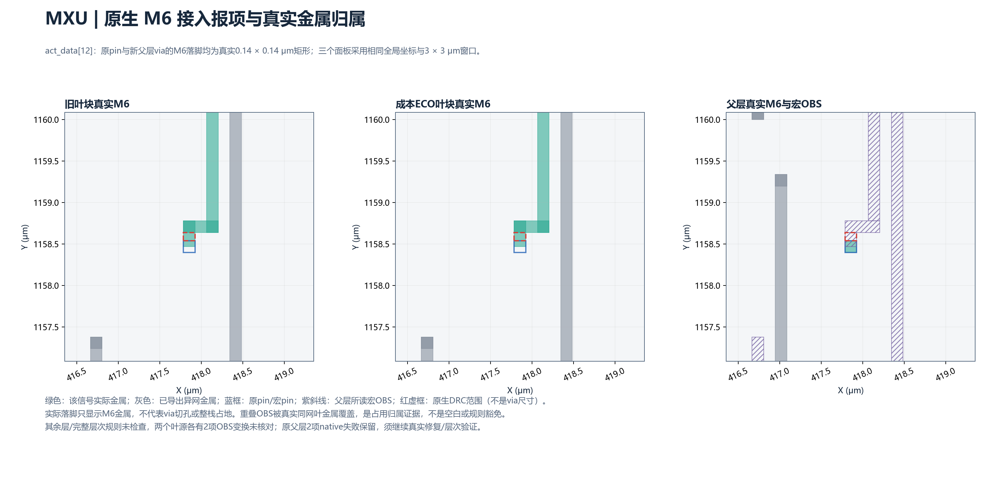
M6实际金属SVG · 原生矩形覆盖与未检查条件
这些旧夹具绑定各自记录的旧叶ODB，不是新成本ECO视图的父层资格。每块只有256个新的父层M10中间接点，原叶M5/M6 pin不改；其余点真实同层重合，非遗漏。
公平周边控制：相同单元成本，不重做C
92812已COMPLETED，两块Aopt均实际增量DRT、RCX、独立native0和所检全块连通通过；GEMM与MXU分别沿用C相同3/1处换型、标准单元master面积+1.596/+0.266μm²，原pin/PG/外框和源保持。原SDC/允许层不变；setup/hold分别0.772449/0.053582和0.249090/0.053253ns。它们是等成本叶块对照，不是共同底座或完整系统收益结论。
上述是历史3/1换型同成本来源；主矩阵当前GEMM的658diode及追加两换型另有真实负载/单元成本，不能直接与此旧Aopt作纯XY收益比较。MXU新M6引出重接也未替换此组旧r04布线/RC来源，须另列实际source。完整周边系统对照仍需匹配后续实现口径。
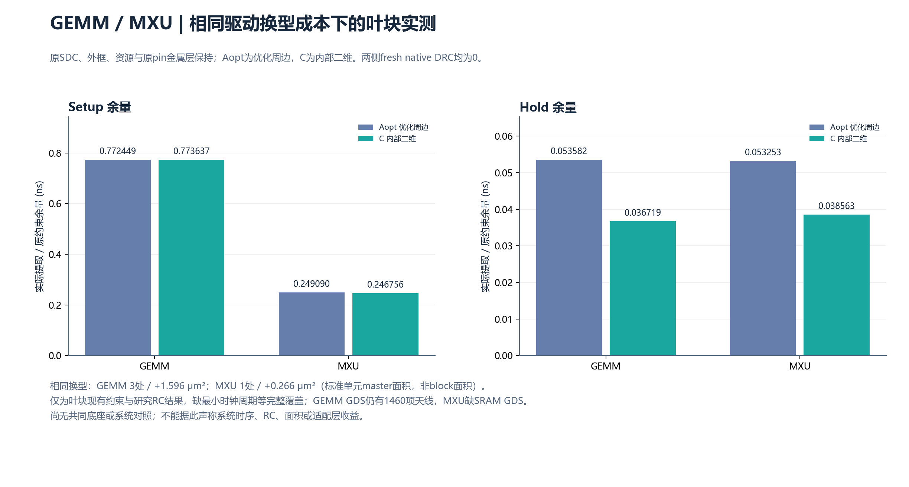
同图SVG；四份数据均来自实际提取回执，非几何线长预测。
实际逐层线长、via及原生日志SHA直接复用已完成DRT最后一组报告，没有重复路由。数值按工具报告精度取整μm，逐层取整和总数可能有小差异；via按DRT口径，不当完整PDN via统计。与候选几何L1、提取RC及系统收益分别记录。即使叶块内部成本增加，也保留内部方案，继续共同底座/适配层系统总成本验证，不能据此撤回边缘并结束研究。
历史天线规则分歧：原始源失败保留
只读审计92825在同一GEMM实际ODB上check_antennas报0网/0pin，而严格合并GDS原deck仍报1460项天线。源SHA保持，未调用修复。实际ANTENNA_X1物理单元和原Liberty模型均存在，输入A的非零capacitance为0.023429（须按原库单位解释）；未加入零电容占位。接下来比较真实LEF规则与GDS公式、连接/层覆盖及diode识别；native0不抹去GDS失败。
92834已定位原生0的覆盖根因：M1–M10的hasDefaultAntennaRule与hasOxide2AntennaRule逐层均为0；原tech LEF没有天线关键字，macro LEF只有diode相关ANTENNADIFFAREA、没有ANTENNAGATEAREA。原GDS deck则启用300:1金属/实际gate面积检查并按实际扩散识别diode。原生缺规则/缺gate模型的0不能代表规则通过；需要从真实GDS补建模型或直接以不修改的GDS检查指导修复，不放宽300:1。
完整映射端点图相对验证：不同于RTL形式验证
92837/92838已核对原始源ODB与新成本ECO：GEMM 226775个非filler实例/826710个信号端点，MXU 179887/635434，全部实例、逐pin网络、方向、时钟/复位/常量及顶层端口一致；仅原定3/1处换型，实际Liberty逻辑与状态合同相等。未修改存储黑盒的实例和全部连接，以相同存储合同为条件的数字功能保持证据通过；不是RTL等价、模拟行为等价或完整物理签核。
新增SYSTEM 92886同样通过全量相对数字合同：438852个原非filler实例、1539803个原信号端点、2229个顶层端口与529989个原网络分量保持；5829个新增实例仅为已核实identity缓冲，980处原实例换型Liberty逻辑/状态相等。逐分量检查原驱动方向可达性、无新增缓冲环、无原网络误合并，9723个未连端点逐项保持，不将NULL统一短接。5个反例测试包括反向缓冲、缓冲环、误合并和未连端点改变，防止仅做无向合并误判。结论以原硬存储合同不变为条件，非RTL或模拟/时序等价；SYS负STA和规则缺项仍然失败。
GEMM天线修复输入：真实多边形对应与实际diode几何
92901已经完成1460项实际GDS错误多边形与原生导体的正面积精确相交对应，均唯一对应，共636个网络；不使用bbox交叉猜网。之后解析diode源层声明时失败（源deck实际使用polygons而不是input），原失败保留。92903只修正源声明读取并按SHA复用已完成对应，不重跑布线或篡改规则。真实标准GDS存在非空ANTENNA_X1，按原deck的(nplus & active)−nwell识别面积0.0081μm²、contact相交面积0.004225μm²；原Liberty具有非零输入电容。上述仍是修复输入准备，未插入实际diode，原1460项仍未修复；几何对应不替代LVS或完整规则签核。
后续已收齐92781：SYS隔离合法化后的成本ECO完成真实详细布线、RCX及fresh native0，466332网/1474481端点所检连通通过；本轮路由前后cells/pin/PG/die原文指纹相同，单元修复/合法化成本另算。实际setup−0.462192ns、hold−0.125999ns，1113条VIOLATED文本标记（不是全部违例计数），仍时序/电气失败。原窗口版−1.779887/−0.389230和历史崩溃保留，不把成本ECO改善混成纯XY收益。
92835导出与新SYS实际ODB/SPEF匹配的2229位物理/研究时序视图，全部原pin/PG/外框保持、SPEF余量准确重放。相对修复前实际新增5829个功能实例、980个原实例换型、1168个原实例移动，标准单元master面积增加6918.128μm²；未新增spacer，原存储宏资源和位置保持。这些均为独立实现成本，不能归因纯XY或称block面积节省；完整功能与时序/电气仍待修复。
共同集成已经实际启动，但尚非合格或冻结底座
新增92846/92847实际导出匹配等成本G/M Aopt全部3753/2172位的非零研究模型；92848导出实际VECTOR完整1022-pin迁移源的2246位模型及LL PG-only完整13507位模型。后者原native4失败保留，明确标UNQUALIFIED_FAILED_DRC_SOURCE，不因模型导出提升为规则通过。
固定信号导体API首轮92853真实失败：BPin不接受FIXED状态枚举；改为安装工具支持的FIRM后，92854实际生成两处接入矩形及含FIXED metal10信号段的ODB/DEF。原失败不覆盖；API探针不代表共同底座实现或规则通过。
六资源实际集成92855在独立common_integration/r01/C目录执行：复用既有完整构造图、真实资源和交错位置、256条×32μm共享导体拓扑/预算，读取匹配的完整详细OBS与实际研究模型；PG、合法接点、固定导体、底层路由及独立验证分别留回执。当前调度状态：RUNNING；当前阶段：FIXED_M10_CONDUCTORS_WRITTEN; LOWER_ROUTE_OR_CHECKS_RUNNING。92930已成功导出真实DEF，但解析未考虑缩进而失败；92931只复用该有SHA的已完成原生DEF，实际核对全部256条FIXED metal10与逐网绑定、32μm×0.8μm几何，总中心线8192μm，原失败保留。不是仅核对计划CSV。底层GRT仍运行，构造端口尚待真实模式降为固定几何，尚无两完整M11/M12功能或合格冻结。
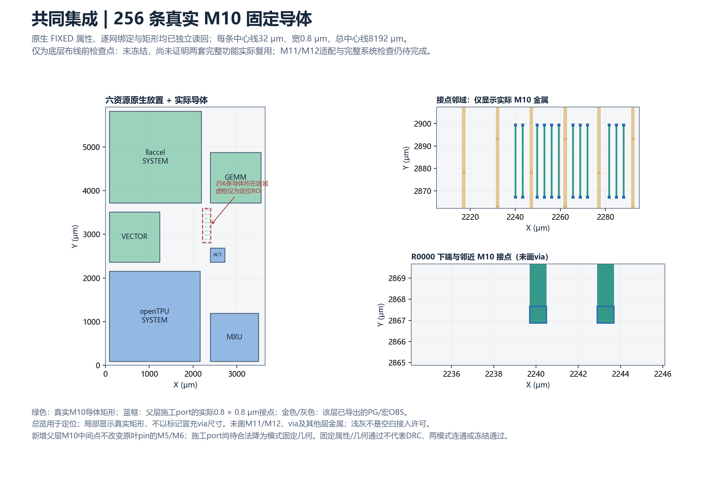
实际导体SVG · 全部256条native坐标CSV · 来源与边界。固定属性/几何已核验，底层完整布线和两模式复用尚未验证。
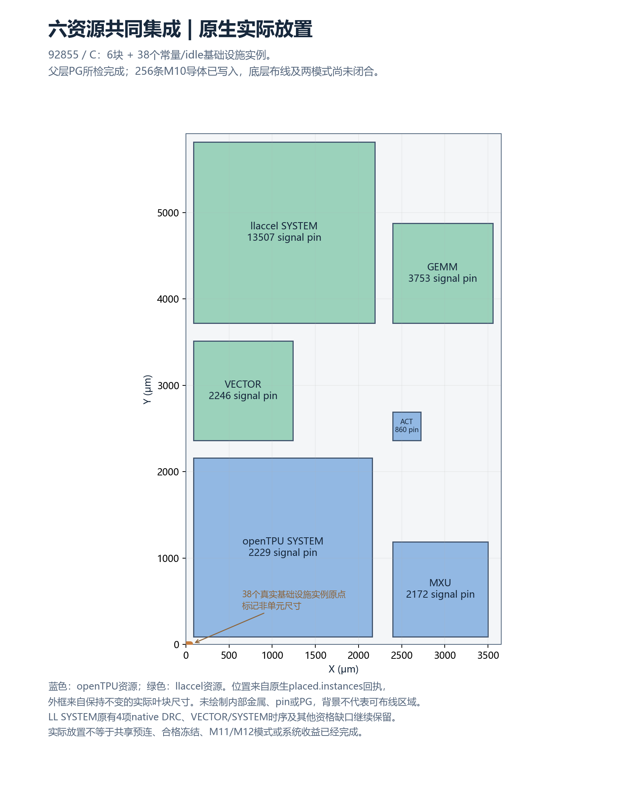
原生实际放置SVG。未显示内部金属，浅灰背景不是空白接入许可。
VECTOR 92861在无GRT、无增量路由、同进程无SPEF的隔离条件下仍EST-0104失败。实际VECTOR有411821个filler，SYS源没有。仅将remove_fillers移到estimate_parasitics之前，92867原生命令成功，实际14处换型、17个缓冲插入并保存检查点；单变量对照证明该排序足以排除本隔离流程中的错误，不能外推已解决所有工具状态问题。上游固定源码参考在增量修复入口拒绝待更新的寄生状态；安装二进制版本仍显示unknown、源树不存在，不能冒称此上游commit就是安装版本。原SDC和最终检查不放宽，新检查点尚未合法化、未重布线/提取，不是最终RC/STA通过。
92872已取得真实终态：从该检查点接续、不重复repair_design，独立合法化、全详细布线、fresh native0、375675条多端信号/时钟网和双PG所检通过；实际RCX后setup仍−4.140220ns、hold0.037989ns，83个文字VIOLATED标记，整体FAILED而非签核。新增180个功能实例、818原实例换型、875原实例移动，标准单元master面积+917.700μm²，全部独立成本；旧−4.195674ns源保留。92914/92915重读实际SPEF分析VECTOR/SYS完整关键路径，不放宽SDC；92913检查VECTOR实际全量有向缓冲合同。最新终态以矩阵和原文为准。提交/固定驱动、初始回执分别保留。
真实提取路径诊断：92914/92915精确重放其VECTOR92872及SYSTEM92781源setup/hold；不是新SYSTEM92968的路径。VECTOR最差路径为p0_r[18]到wr_data_r[18]，发射Q之后141个cell arc约6.740ns、142段net arc约0.198ns；cell值含实际负载/slew影响，不是无法改善的零线长下界。旧SYSTEM最差输出路径有8个cell arc约0.455ns、9段net arc约1.052ns，其中最后到port约0.657ns；新buffer重排后的实际余量/DRC另列。工具JSON有舍入，不代替原文6位余量；未放宽时钟，不把旧路径当新源或修复通过。
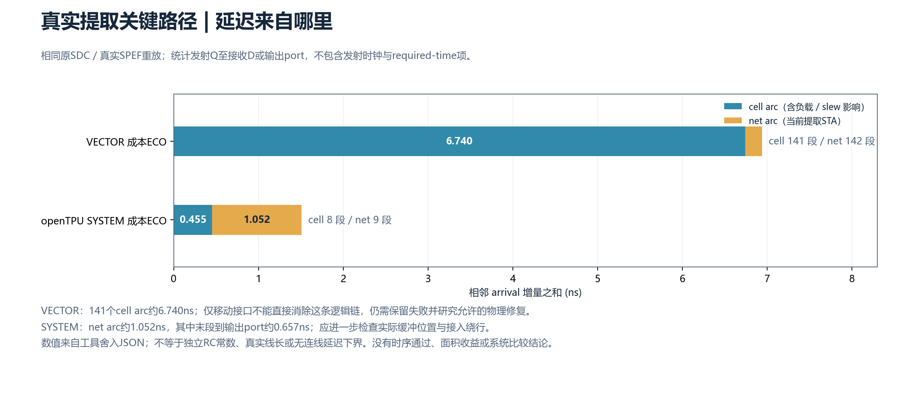
实际SPEF关键路径；不包含发射时钟/required-time项，不是线长或零连线下界。SVG · 原文SHA/数值
SYSTEM真实输出缓冲试验92921：全部1244个输出port纳入选择，772条私有identity链、1262个已有buffer生成真实重排，不增单元、不换型、不改网络。实际Diamond合法化后OpenROAD触发Signal11（implementation=-11），没有完成路由；moved_NOT_LEGALIZED_OR_ROUTED.odb及完整失败回执保留，原pin/PG/外框和源保持。后续复用已存检查点，在独立不加载STA的进程验证合法化，不重复生成同一移动方案。原SYS源时序失败不删，当前仍非物理修复通过。
92925独立恢复已实际推进：复用上述1262个buffer坐标，独立几何进程不加载Lib/SDC；原生合法化、check_placement及原功能master/连接与非选中单元位置合同均通过，原本无filler则未新增。原生关闭的placed ODB及两份实际合同文件另索引SHA，与原source合同相等；不是重选点或跳过检查。随后在新进程恢复原Lib/SDC及M2–M8/M4–M8约束，完整重接线继续；最终DRC/PG/连通/RCX/STA未终态，不宣布时序修复或准确崩溃根因已证实。
GEMM真实天线ECO：92910已完成636个真实ANTENNA_X1接入、完整重布线、fresh native0及268637网/806621端点所检连通、双PG和真实RCX。setup/hold为0.770727/0.039500ns，但新增两个max-cap失败：_328822_/ZN（实际INV_X1，67.621605>60.730000fF）、_332783_/ZN（实际XNOR2_X1，27.449909>26.016199fF），并非电气通过。原功能实例位置/连接、原pin/PG/外框保持；新增636单元master面积169.176μm²、每个实际输入cap0.023429fF均单列成本，非block面积变化。
92929独立原生全量数字合同通过：原226775非filler实例、826710个信号端点、3753端口完全保持，新增636个真实单输入无输出/状态diode各连到已核对636网；真实负载变化不被当作RC/时序等价。92912最新严格GDS merge=0、原deck return=0、实际报项=37；分类={'METAL3_ANTENNA': 2, 'METAL4_ANTENNA': 6, 'METAL5_ANTENNA': 13, 'METAL6_ANTENNA': 9, 'METAL7_ANTENNA': 1, 'METAL8_ANTENNA': 5, 'METAL10_ANTENNA': 1}。不是完整制造规则、系统LVS或电气资格。两个源cap失败及其后续尺寸修复分别记录，未降负载或删检查。
92940两处真实换型已终态：INV_X1→INV_X2、XNOR2_X1→XNOR2_X2的原Liberty逻辑/状态严格一致，新max-cap分别121.46/52.0325fF。当前fresh native0、所检全网连通、双PG和原pin/PG/外框保持；真实setup/hold=0.770752/0.039624ns、VIOLATED文字标记=0。独立全量数字图验证仅这两个master改变，636真实diode及原信号端点/网络/端口全部保持。额外两换型/一个移动/master面积+1.330μm²单列，非XY或block面积收益。以上不是原636-diode版本的cap2已经不存在于历史；两版本分别保存。换型后GDS/原deck作业92943仍独立验证，未与旧版本37项混写。
92943新换型版严格GDS已终态FAILED：merge/原deck命令均0，但仍37项天线，不能因native/电气通过就称完整规则合格。该版本的DEF、GDS、RDB和原生全量几何均有独立SHA，不与旧37项直接混用。
92972已按新换型版精确SHA读取7516494行原生几何：37个真实GDS多边形均唯一关联22条真实网；与现有636个diode网交集为0，22条均尚无该ECO diode。全部22网及层级CSV，原多边形/各网交面积证据保留。不是按bbox猜网或GDS LVS通过；下一步定向增量接入，不重复添加已有负载，不能提前称天线修复完成。
SYSTEM 92925已终态失败：真实GRT/DRT命令执行完成，但随后preserve_contracts在导出已移动buffer坐标时遇到空实例句柄（Empty command name）。这是恢复脚本将selected_buffers值保留为空造成的导出失败；已有原连接、非选中位置和pin/PG/外框文件仍需分别按SHA核查。没有保存最终routed ODB，fresh native、RCX/STA及最终物理合同尚未执行，空route.drc不是资格通过。原合法化检查点和全部失败保留；修复原生实例查找后在新目录复用检查点，不重新选择或移动buffer。
SYSTEM92968已终态FAILED：复用合法化检查点并修复句柄导出后，完整route/RCX/原SDC已完成、466332网所检连通通过；fresh native仍2项，setup/hold −0.056303/−0.119814ns、1233文字违例。旧−0.462192/−0.125999ns、原native0及全部工具失败分别保留。原接口/PG/外框、原功能连接和非选中位置保持，现有输出buffer重排不是纯XY收益或时序闭合；旧r03研究模型不是这个新source的匹配视图。
92974前置已核查同一真实下层检查点的1541个M10接点、两唯一时钟alias及via10下层0.8×0.8μm落脚；两模式各770条边/1540个实际hook，256共享资源分别使用真实A/B两端。该核验只属于前置绑定，路由以逐模式真实终态为准；私有下层、叶块与完整检查未闭合，未冻结。
92974已终态FAILED，优先于此前运行中记录：openTPU及llaccel两个770边适配子试验均GRT-0116拥塞失败，未进入DRT；fresh DRC、完整边连通及实际M10 landing包含检查均未执行，不记0/通过。两者使用相同实际但未合格下层输入，仍不证明两功能已实现或冻结。原报告估计拥塞不是实际金属DRC；下一步定位原始congestion区域与接口/网格约束，不能只因耗时归因或放宽规则制造通过。
93015受控工具诊断终态：相同全frame/全部原M10 PG及OBS约束下的2/770条实际边，native route/fresh DRC0、2网/4端点所检连通通过；只证明子集，不能代表完整系统。失败检查点仍有770网的原生DB guide，已真实导出，不因grt::have_routes=0猜测数据不存在。下一步复用完整DB guide继续DRT，原GRT-0116仍记FAILED，不重跑同一全局搜索或使用allow_congestion/infinite_cap改变结果。
93025全770原生guide接续已FAILED：两个模式均实际进入DRT，pin access完成后报DRT-0352：Input route guides are congested。没有生成实际适配布线，fresh DRC、770边物理连通、M10 landing包含检查未执行，不能填0或通过。全部原DB guide和原GRT-0116失败保留，输入/层/规则未改变；2边成功不推广为全量成功。后续依据原生API的搜索预算参数作独立试验，不能以allow_congestion/infinite_cap绕开原失败。
93028新SYSTEM真实SPEF路径诊断已完成：精确重放92968源的setup/hold −0.056303/−0.119814ns；当前最差setup由u_slice.u_quant.ackw寄存器到bit_114845，最差hold由bit_1216到_28604_[223]寄存器，不使用旧92781源路径解释新版本。只读导出两DRC所属实际网_215139_的全层矩形，原SDC/ODB/SPEF保持；不是修复通过。当前路径及来源SHA · 实际矩形CSV。
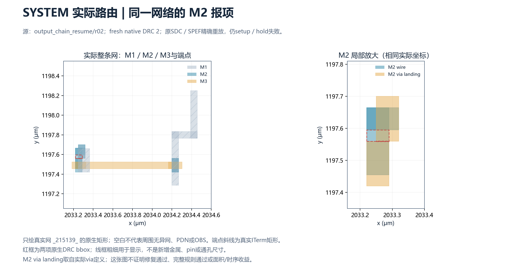
实际M2报项SVG。只画该网，空白不表示周围无金属/PDN/OBS；红框是原生DRC bbox，显示线宽不是物理尺寸。
93031新clean_patches试验前置失败：驱动在服务器端对容器内部标准单元Lib路径计算SHA，FileNotFoundError，尚未执行路由/RC/STA。原日志与空输出目录保留；修订驱动只在原工具镜像内读取同一Lib并记录前后SHA，新r02尚未提交，不能记修复通过。
93030是新的独立搜索试验：FastRoute拥塞迭代预算由默认50增加到200，verbose记录实际迭代；相同原DB、770边、轨道、PG/OBS、pin和物理规则，原GRT/DRT失败保留。终态以原生回执为准，运行中不算通过；下层仍未合格冻结。
200次搜索 opentpu 子试验已终态：native返回{'detailed_continuation': 1}，原生阶段{'export_existing_failed_GRT_guides': 'EXECUTED', 'global_route_budget200': 'FAIL'}。GRT失败的模式没有进入DRT/fresh/完整连通/RC/STA；原物理规则与全部770边不变，不能当系统实现或架构不可行证明。
200次搜索 llaccel 子试验已终态：native返回{'detailed_continuation': 1}，原生阶段{'export_existing_failed_GRT_guides': 'EXECUTED', 'global_route_budget200': 'FAIL'}。GRT失败的模式没有进入DRT/fresh/完整连通/RC/STA；原物理规则与全部770边不变，不能当系统实现或架构不可行证明。
93038 SYSTEM native clean_patches/r02：终态：native {'implementation': 0, 'fresh_DRC': 0}，fresh DRC 2，setup/hold -0.056396/-0.119919ns。在原容器内核验同一Lib，保留93031前置失败；不改pin/单元/PG/原OBS/原SDC与层集合。该新试验不是改检查或时序闭合，当前矩阵已完成源与新尝试分别记录。
93040 MXU M6引出试验前置失败：旧叶回执不含SYSTEM格式setup_ns字段，KeyError，未进入路由；原日志保留。r02改为按SHA读取原生setup/hold原文，不改变物理输入或试验约束。
93041 MXU实际M6接入重接/r02：终态：native {'implementation': 0, 'fresh_DRC': 0}，fresh DRC 0，setup/hold 0.24669/0.038538ns。从成本ECO/r04源保持原act_data[12]的M6层、XY及0.14×0.14μm尺寸，临时M6路由ring约束引导真实接线，完成后移除仅本次新增约束；保留原占用OBS，不剪去真实金属。gap/thickness各0.14μm只是临时约束参数，不替代M6完整spacing规则。新父层可达性/DRC未执行，不能凭叶native0宣称原M6–OBS报项已修复。
GEMM658父层93043前置失败：旧修订M10坐标未满足当前真实OBS/PG/其他接点的重新筛查，断言拒绝，未路由；不是原生金属DRC结论。旧92841只代表旧叶源，失败不覆盖。新r02复用经SHA绑定的真实detailed LEF，并在当前源内重新选择128号新增父M10点，原叶M5/M6不改。
GEMM658父层93049终态FAILED：已通过当前源重新选点，实际使用658diode clean ODB/匹配非零模型与全部3753原信号位；严格GRT仍GRT-0116拥塞失败，未执行DRT/fresh/所检全网连通/RC/STA，不能用旧父层native0替代。原DB/LEF/模型SHA保持，256个新增M10接点与原叶M5/M6分别记录；新128号点为787.295/944.07μm，6.4μm只是局部搜索packing guard，不是通用技术规则。
VECTOR93048已FAILED：同一当前r01源/原SDC，在remove_fillers和placement估计后，setup优化首次迭代前Signal11/native−11；不是逻辑不可能证明，也未定位为CloneMove本身的根因。未生成修复检查点、after指纹或后续合法化/布线/RC/STA，pin/PG保持的after检查未执行，不能把缺失输出的false当实际改了pin。原闭合源文件保持，原−4.140220ns失败继续保留。24GB sbatch请求此前已被调度器拒绝且无作业号，后按实际c96内存配置复用mem=0才提交；两个阶段分别记录。
VECTOR93073上下文试验已FAILED：原guide/GRT上下文已实际初始化，setup优化超过原崩溃位置后报RSZ-0074：无法从global routes为pin _362545_/ZN、net _080826_建立完整树（找到1个pin、应为2个）。不是Signal11根因已解决或时序改善。未生成可用检查点、after合同、合法化/新详细布线/RC/STA；原闭合源SHA保持，−4.140220ns失败不替换。原回执repair_model固定文本仍写无GRT，实际r02脚本/阶段/new_single_context_change表明已加载原guide；本段明确纠正解释，原回执不改写。下一步需原生内部route同步或不依赖残缺guide的工具修复，不无变化重试。
93072 SYSTEM原生via叠放接线：终态；native={'detailed_edit_and_analysis': 0, 'fresh_DRC': 0}；fresh DRC=0。SYSTEM使用原网实际via1/via2定义及原M1端点重接，不是修改最终LEF；单网物理改变、全部网连通/PG/RC/原SDC独立检查。MXU在原2172条真实父层路线/PG上换入新actual LEF/OBS，原pin层/尺寸/位置/语义保持，不剪真实OBS；它只复核接入，不是父层RC/STA或共同底座资格。原失败及输入SHA保留。
SYSTEM93072实际DRC修复已闭合，时序仍失败：fresh native=0，setup/hold=-0.056396/-0.119919ns、原文字违例1233。466332网/1474481端点所检连通、双PG/RCX/原SDC已执行，原cell/pose/连接/pin/PG/外框SHA保持；全部多端网WIRE/VIA矩形多重集比较只_215139_改变，其余466331网表示相同，不把矩形表示等同几何并集或RC等价。作业门槛保留负时序，Slurm FAILED不抹去fresh0事实，fresh0也不提升为全部资格。当前矩阵升级到实际新源，未导出新匹配研究视图或父层/完整GDS验证。
93074 MXU全部2172真实父层复核：终态；native={'actual_view_swap_and_access_export': 0, 'fresh_DRC': 0}；fresh DRC=1。SYSTEM使用原网实际via1/via2定义及原M1端点重接，不是修改最终LEF；单网物理改变、全部网连通/PG/RC/原SDC独立检查。MXU在原2172条真实父层路线/PG上换入新actual LEF/OBS，原pin层/尺寸/位置/语义保持，不剪真实OBS；它只复核接入，不是父层RC/STA或共同底座资格。原失败及输入SHA保留。
93075能力探针包装失败保留：原生工具已完整输出report_check_types帮助及库声明，但Python写元数据时漏导入sha，NameError，Slurm FAILED；不伪造成功回执，也不重跑同一只读探针。原生帮助确认支持min_pulse_width/min_period/max_skew及clock_gating_setup/hold；实际typical库有45处min_pulse_width timing_type、无minimum_period timing_type声明，计数不是设计检查通过。已修正脚本供复用，新的六块逐源RC/原SDC扩展检查单独提交，空报告不能当库已定义或签核通过。
93076新的六块扩展STA：按各自已闭合实际ODB/SPEF/原SDC逐SHA重读，补查原生min pulse width、min period、max skew、gating setup/hold及min slew/cap/fanout，输出真实clock/skew/latency、约束与寄生覆盖。每块终态及源余量重放分别记录；未终态不当通过，派生path minimum period与缺失Liberty minimum_period规则严格区分。这个只读覆盖审计不改变设计，也不修复原负时序。
| 扩展检查对象 | 实际源版本 | 原生执行 | setup/hold原文重放 | 新增检查文字VIOLATED | 证据 |
|---|
| act | trials/act-access-r03/act-C | return 0 | {'setup': True, 'hold': True} | 0 | 原生回执/文件SHA |
| mxu | pin_escape_route/r02/mxu-C | return 0 | {'setup': True, 'hold': True} | 0 | 原生回执/文件SHA |
| opentpu_aux | system_patch_route/r02/opentpu_aux-C | return 0 | {'setup': True, 'hold': True} | 0 | 原生回执/文件SHA |
| gemm | antenna_incremental_eco/r01/gemm-C | return 0 | {'setup': True, 'hold': True} | 0 | 原生回执/文件SHA |
| vector | vector_resume/r01 | return 0 | {'setup': True, 'hold': True} | 0 | 原生回执/文件SHA |
| llaccel_aux | trials/llsys-pg-r03/llaccel_aux-C | return 0 | {'setup': True, 'hold': True} | 0 | 原生回执/文件SHA |
表中0只表示新增报表没有文字VIOLATED；不表示全部规则已定义或系统时序通过。原有setup/hold、电气、未标注寄生和minimum_period覆盖缺项仍独立保留。
VECTOR93083受控placement上下文试验：从实际安装repair_timing Tcl body取得证据：design_is_routed为真时会切换detailed_routing寄生来源，不能仅凭此前estimate_parasitics -placement宣称优化过程保持placement模式。新试验只在内存副本移除旧SIGNAL/CLOCK dbWire，原文件/单元/端点/pin/PG/层集合/原SDC不改；原生谓词由1变0、375675条旧wire被移除，进入placement优化。新检查点尚不代表合法化、详细接线、RC/STA、数字等价或修复成功，旧两个失败保留。
两模式各1540个原生M10 hook上计划的默认via10单cut接入，逐一检查1185030对矩形，最小cut矩形间距2.4μm；相对明确假设0.88μm未发现成对冲突。坐标与0.8μm cut模板来自真实hook plan，原叶M5/M6不改。这不是已放置via、实际DRC、OBS/PG/PRL/包围检查或完整布通，也不证明已找到GRT失败根因。全部来源/假设 · 每个计划接点最近邻CSV。
93089 SYSTEM当前源实际视图：native export=0、独立模型重读=0，匹配全部2229个信号位及原PG/层/尺寸，真实SPEF余量重放=True。新源扩展检查独立执行、原负setup/hold不删；minimum_period覆盖仍缺失，不是父层、完整GDS/RTL或系统资格。两份当前真实ODB各自导出完整_215139_矩形，非根据脚本猜测路线。
LL SYSTEM：三处实际 pin / 末端接线修复
真实原网的M4–M7与via4–via6矩形局部放大，左右同尺度。保留完整内部C；fresh native4→0，但负setup/hold、父层接入和完整规则缺项均保留。白底不代表无异网/PG/OBS，图不替代验证。
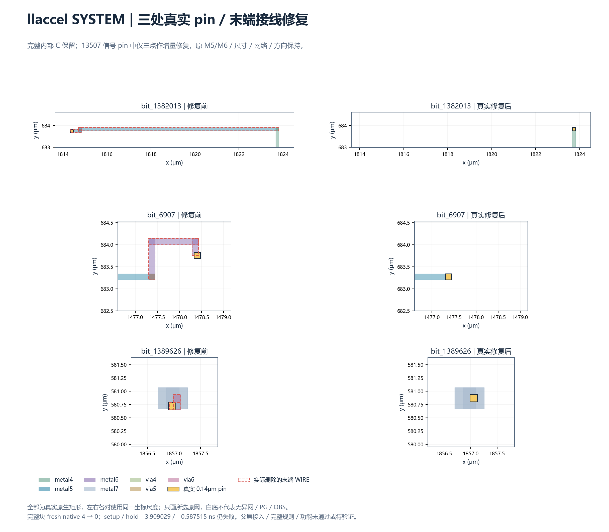
SVG · 原文SHA及验证范围
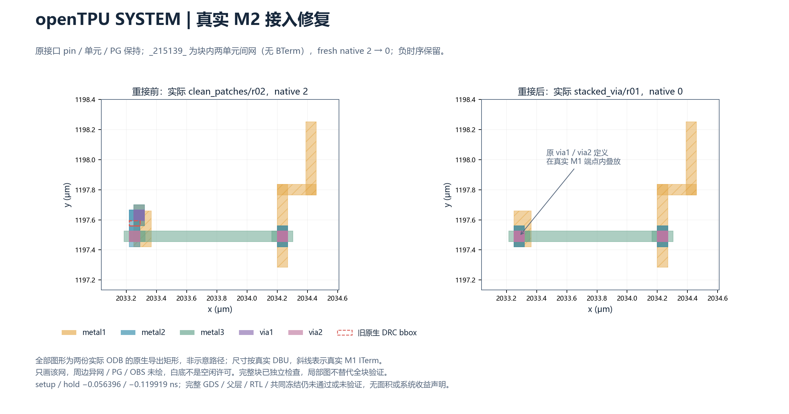
真实接入修复SVG · 两份完整目标网实际矩形CSV · 源SHA及未验证项。坐标同尺度、矩形为实际尺寸；周边异网/PG/OBS未绘，白底不是空闲。
93083原生placement优化阶段已完成，尚非物理实现：原生返回{'clone_heuristic_probe': 0, 'source_graph': 0, 'repaired_graph': 0}；实际待布线检查点新增49个BUF、365处换型，master bbox面积较当前r01再增约354.046μm²，保留原负启发式余量（−4.179502/0.014579ns）。这不是提取RC或时序改善，不是block面积变化，原917.700μm²等此前成本另继承。原pin/PG/外框保持，尚未合法化/详细接线或RC/STA。
93094严格数字关系检查FAILED：复用原生source/repaired完整图并按SHA核验，没有重复导出或跑P&R。消去新增buffer后仍有原逻辑网拆分（An original logical net split after buffer elimination），当前检查点不能提升为合格新实现；不能仅凭新增单元全为BUF或状态单元合同相同就宣布功能等价。原失败、全部原生图及Liberty保留，下一步逐端点定位；尚未排除实际逻辑损坏，也未完成更一般等价证明。新P&R驱动的前置门槛要求此关系通过，尚未提交。
93102原始分区失败已定位：确实只有net83166一条原网、11个原端点；5个输入被改接net158807，包含AOI/NAND输入及place83183/A。CSV枚举全部失败原网，原生图/SHA及11个实际端点均保留。这是分区检查定位，不宣称原优化必定改变布尔功能，也不豁免原失败。
93106实际五输入恢复：先模拟接回真实原驱动place83184/Z所在net83166并要求未修改的严格比较器通过，再在native ODB中真实改接5个输入、重新导出完整原生图，同一严格关系检查=True。原321905个非filler实例、1076467个信号端点、2246顶层端口及380561驱动分量核对，49个新增BUF为无环有向恒等链、365换型Liberty合同匹配、607个NULL端点逐项保持。原cell master/位置/面积及pin/PG/外框不变；本次只恢复网络，未加单元/换型。原失败版本另存，新检查点仍未合法化、详细接线、RC/STA或RTL/系统等价，不能据此提升完整物理资格。下一步才在严格通过的新源上实际跑P&R；原VECTOR已布线源仍是r01负时序版本。
93092 LL SYSTEM实际四DRC诊断：在有完整13184个内部移动pin的PG-only备选源，全部四原生报项对应三网bit_1382013、bit_6907、bit_1389626。按闭合725253网全块原生导出SHA，保留三条完整目标网862行接入矩形及局部831行真实多端信号/时钟几何，并从同一clean ODB另读真实固定VDD/VSS与OBS。原文件/PG/约束不改；这是定位，不是修复或DRC通过。原full-window92690/92691现已终态失败（GRT-0116，后续未执行），备选不冒充新窗口终态；单端未用网和库内部GDS金属覆盖缺项单列。
93090在新目录实际运行两模式770边guide grid相位试验：原点改为2850/2850 DBU（1.425μm），保留默认50次搜索及原物理轨道/层/规则/hook XY/PG/OBS；只测试离散网格敏感性，不等于根因已定位或布通。原200次/原50次/DRT失败保留；原R02未合格底座输入仍未升级到新叶源，未合格冻结。
网格相位 opentpu 子模式终态：native={'detailed_continuation': 1}，实际阶段={'export_existing_failed_GRT_guides': 'EXECUTED', 'global_route_grid_phase_half': 'FAIL'}。GRT失败则DRT/fresh/全边连通/RC/STA未执行，不用Slurm另一子模式仍运行覆盖此失败。
网格相位 llaccel 子模式终态：native={'detailed_continuation': 1}，实际阶段={'export_existing_failed_GRT_guides': 'EXECUTED', 'global_route_grid_phase_half': 'FAIL'}。GRT失败则DRT/fresh/全边连通/RC/STA未执行，不用Slurm另一子模式仍运行覆盖此失败。
93112 VECTOR已从严格通过的真实五输入恢复源继续P&R：source_kind=partition_restored_r01，原生子阶段返回={'legalization': 0, 'route': 0}。本轮不重复setup/hold启发式优化，原SDC/时钟/负载/允许层保持，单元和buffer成本继承并单列；原生合法化、placement检查和原filler恢复以实际阶段记录为准。详细布线尚无闭合回执时，fresh DRC/全块连通/RC/STA均不填写通过，主矩阵继续保留旧实际已布线负时序源。
该VECTOR新变体已终态：fresh native=0，所检完整信号/时钟几何=True（375723网、1073317端点），双PG/RCX/STA阶段={'global_route': 'EXECUTED', 'detailed_route': 'EXECUTED', 'VDD': 'EXECUTED', 'VSS': 'EXECUTED', 'whole_signal_geometry': 'EXECUTED', 'rcx': 'EXECUTED', 'sta': 'EXECUTED'}；真实setup/hold=-4.14893/0.025481ns，文字VIOLATED=82。整体仍失败，未完成RTL/完整规则/新源父层或系统资格。与旧r01的−4.140220/0.037989ns相比，当前修复未改善这组提取余量且增加单元成本；保留可实现的内部C源，不退回边界，也不把此变体提升为主源或纯XY收益。
93128闭合实际成本复核：新增49个非filler单元，365个原非filler换型、325个原非filler移动；另有94个重复filler实例名对应的master变化。原回执459个master变化是365个非filler＋94个filler，不能全称逻辑换型。排除BLOCK/filler的标准单元master面积增量仍约354.046μm²；旧+917.700μm²另继承，外框不缩小，无面积节省或纯XY声称。原回执/实际CSV保持，未重新优化或P&R。
93117两模式真实固定预连上下文试验：保持全部770条原适配边、1540个实际M10 hook及256条原FIXED M10导体不变，仅将已经由同一实际导体连接的两条适配支路合为同一物理网络交给原生路由。每模式514个物理网＝256个四端共享网＋256个两端旁路＋2个时钟网；770条原逻辑边逐条保留，不是删256条边或减少预连预算。辅助端口包含被动接点，其输入标签不代表额外功能驱动；该helper仍不是加速器RTL或有效STA模型。原两支路分开路由的失败保留，未断言其表示就是失败根因。
预连上下文 opentpu：原生预路由DEF已核对514网、1540端点、全部770边成员及256条FIXED M10；DEF SHA256 833661a64a42145c88be6f077dd629c45758ed08572f72f825db63178b6f8f67。路由状态：native返回0，完成于2026-10-29T01:43:38.949819+00:00。原R02底座仍未合格/未冻结、未升级新叶源；此核对只覆盖预路由连接成员和FIXED状态，尚非已布线几何或两完整功能。最终仍须全部770边实际连通、M10材料精确并集/FIXED属性、原hook/OBS、fresh DRC及后续RC/STA；无终态不报告布通或系统收益。
该模式实际验收：fresh native DRC=8；所检连通=False，已连通物理网=258/514。M10原材料包含/FIXED保留与连通分别检查，不将native路由命令返回0当布通。
闭合原生guide与实际端点分量核对：只有258个物理网有guide，256个共享固定网没有guide；全部770原边中258条物理连通、512条断开。证据显示此流程跳过了已有FIXED片段的剩余连接，尚不等于安装二进制源码级根因。全部514网及770边验收CSV。保留这次失败，再以只影响helper guide搜索的副本暂取下原FIXED片段、在DRT前按原生定义精确恢复的独立方案测试；不改变原底座、最终材料、PG/OBS、规则或完整验收。
预连上下文 llaccel：原生预路由DEF已核对514网、1540端点、全部770边成员及256条FIXED M10；DEF SHA256 e1f1f72619dd24674f4766303d5216eadf7d2822b68c1b20765256465bf01399。路由状态：native返回1，完成于2026-10-29T01:47:19.090394+00:00。原R02底座仍未合格/未冻结、未升级新叶源；此核对只覆盖预路由连接成员和FIXED状态，尚非已布线几何或两完整功能。最终仍须全部770边实际连通、M10材料精确并集/FIXED属性、原hook/OBS、fresh DRC及后续RC/STA；无终态不报告布通或系统收益。
该模式实际验收：fresh native DRC=None；所检连通=None，已连通物理网=None/None。M10原材料包含/FIXED保留与连通分别检查，不将native路由命令返回0当布通。
93120后续实际运行：在新目录以同一全部514网/770边/1540 hook生成guide，只在helper内存搜索副本暂取下256条既有FIXED片段，原下层文件不改；无论GRT成功或失败都先精确恢复原M10 FIXED，再保存检查点。若成功，必须确认全部514网均有实际guide才允许DRT，随后仍逐网检查真实连通、固定材料精确并集/FIXED、原hook/OBS与fresh DRC。只改变guide构造上下文，不改变规则、原层、拓扑或预连预算；未终态不称布通，更不是完整系统/冻结或RC/STA资格。
93120 opentpu 已终态：native返回1，完成于2026-10-29T02:14:31.329105+00:00；失败原文和恢复后的实际FIXED检查点均保留，不把恢复固定线段当GRT/DRT通过。
93120 llaccel 已终态：native返回1，完成于2026-10-29T02:10:07.515610+00:00；失败原文和恢复后的实际FIXED检查点均保留，不把恢复固定线段当GRT/DRT通过。
93129原生CuGR全量试验：依据已捕获安装版global_route的-use_cugr支持，在同一真实hook/拓扑/规则/临时guide副本恢复流程中换用CuGR；两模式均已取得全部514网的实际guide并在恢复原FIXED后进入DRT。该阶段突破不等于实际连通，原FastRoute失败不删。
CuGR opentpu 实际终态：native=0、fresh native=6、连通=False（258/514物理网），原256 FIXED属性保持=True。即使guide完整，所检连接失败仍是失败；这进一步提示DRT对已有固定片段的剩余支路处理受限，尚不声称源码级根因或两完整系统。后续必须解决实际支路接入，不能把零/少量DRC或CuGR命令成功作为完成。
CuGR llaccel 实际终态：native=0、fresh native=27、连通=False（258/514物理网），原256 FIXED属性保持=True。即使guide完整，所检连接失败仍是失败；这进一步提示DRT对已有固定片段的剩余支路处理受限，尚不声称源码级根因或两完整系统。后续必须解决实际支路接入，不能把零/少量DRC或CuGR命令成功作为完成。
LL SYSTEM真实三pin/三网局部接线：针对已定位的四项原native报项，将bit_1382013(M5)、bit_6907(M6)、bit_1389626(M6)分别移到其真实原网既有via4/via5/via6落脚；原0.14×0.14μm尺寸/层/网络/方向/真实逻辑端点保持，删除八个明确原末端WIRE矩形，其余线与所有via定义/位置要求保持。完整13184个内部移动pin的C布局保留，不是少量内移伪装二维，也不重复92747的全pin-access失败路线。原目标父层未知项不指派。
via-tip r01：native阶段返回={'actual_edit_and_analysis': 1}；完成时间=2026-10-29T02:13:55.577910+00:00。r01在容器读取原SDC时STA-0340提前失败，尚未改线；r02只补原issue55约束目录的只读映射，源SDC/时钟/负载/规则不改，随后实际三网编码接线及双PG检查已执行，RC/STA/独立fresh和完整13507-pin合同分别以终态回执为准。未终态不记DRC/全网连通或父层资格通过，不将原生编码器接线说成重新执行了GRT/DRT搜索。
via-tip r02：native阶段返回={'actual_edit_and_analysis': 0, 'fresh_DRC': 0}；完成时间=2026-10-29T02:58:14.229357+00:00。r01在容器读取原SDC时STA-0340提前失败，尚未改线；r02只补原issue55约束目录的只读映射，源SDC/时钟/负载/规则不改，随后实际三网编码接线及双PG检查已执行，RC/STA/独立fresh和完整13507-pin合同分别以终态回执为准。未终态不记DRC/全网连通或父层资格通过，不将原生编码器接线说成重新执行了GRT/DRT搜索。
93132实际共同下层CuGR接续：从已原生审计的同一六资源/38基础设施/256 FIXED M10检查点接续，不重复布局或PDN；位置、pin/hook、实际旧R02叶视图、拓扑/预算、原signal M2–M10/clock M4–M10均保持，仅更换原生全局搜索器。原92855长期作业不取消或覆盖。新目录独立执行DRT、全部端点图/几何与双PG/fresh检查；仍未冻结、未执行该下层完整RC/STA、未实现两完整功能，原叶失败/真实GDS/规则覆盖缺项继续保留。具体native返回=1，完成时间=2026-10-29T02:43:13.785768+00:00。
93132已取得终态失败：CuGR全局阶段已完成并保留带SHA的global.odb与原guide；DRT读取设计时DRT-0302：Unsupported multiple pins on bterm access_0001。原共享施工端口使用两个BPin容器，不能因此视为底层布通。保留该原生工具限制及失败，不删除原固定金属或把DRT未执行写成零项。
93149下层实际接续：复用93132已完成的原CuGR检查点/guide，不重复全局路由。只把256个共享施工BTerm的两个BPin容器合为一个容器内两块原矩形，原24767叶pin、两端0.8μm接点、原网络/FIXED导体、PG/OBS/位置均不改；逐项核对扁平pin几何/PG/实例保持。该表示修复尚不是冻结前全部施工端口降为固定几何，后者仍待完成。原DRT-0302保留，新DRT/全端点/双PG/fresh各自记录，尚未资格化。
93149实际FAILED保留：两个BPin容器问题已越过，DRT随后报DRT-0073：u_llaccel_aux/bit_1025无access point，未完成下层布线。原包装器又因pin行顺序变化触发字节哈希断言；后验逐行多重集复核10657行完全相同、无遗漏/重复，PG和实例字节本来相同，因此该断言不是几何移动的证据。原失败回执不改，真实NoAP仍是物理接入失败，不能据此说共同底座完成；后续须处理该pin的真实轨道/金属/PG/via条件。
93148原生wire合成API已核实：在同一安装工具中dbWire.append真实执行，原生重新导出的WIRE/VIA矩形多重集与源A+B完全相同，DEF中的FIXED/ROUTED属性同时保留，原输入SHA保持。这是小型工具API试验，不是接口路由或系统通过；r01包装器未设置Singularity PATH，在启动原生工具前FileNotFoundError，原失败日志保留，r02改用项目标准作业环境。
93150两模式全770支路实际试验：为避免既有FIXED片段使原生路由跳过剩余连接，先在原770支路/1540真实hook的helper中完整CuGR/DRT，再通过已验证的原生opcode append合成514个物理网及同一256条实际原FIXED M10导体。原底座文件不改，所有支路矩形/通孔必须精确保留，最终逐一验证全部770原边、原hook/M10材料/OBS/FIXED及fresh DRC；另对全部256条真实固定桥作几何删除敏感性检查，区分实际必要的固定桥与冗余上层旁路。分析中的删桥不修改实际ODB。当前是实际运行的适配器流程，尚非两套完整加速器、合格冻结或有效系统RC/STA；提交本身不算通过。
全支路合成 opentpu 终态：原生阶段={'all770_branch_route': 0, 'exact_native_composition': 0, 'fresh_DRC': 0}，fresh=127，最终几何连通=True；实际失败=None。所有门槛分别验收，不把原生0当完成。
该结果仍失败：独立原生类型统计 {'Metal Spacing': 37, 'Short': 89, 'Cut Spacing': 1}。本网连通和按本网删桥的256桥依赖不能排除跨网短路；存在Short时，不得称真实功能连接、电气隔离或完整固定预连复用已通过。原生实际支路/通孔矩形多重集与FIXED完整保留只证明合成未改变源材料，不能覆盖原路由本身的错误。
全支路合成 llaccel 终态：原生阶段={'all770_branch_route': 0, 'exact_native_composition': 0, 'fresh_DRC': 0}，fresh=14，最终几何连通=True；实际失败=None。所有门槛分别验收，不把原生0当完成。
该结果仍失败：独立原生类型统计 {'Metal Spacing': 8, 'Short': 6}。本网连通和按本网删桥的256桥依赖不能排除跨网短路；存在Short时，不得称真实功能连接、电气隔离或完整固定预连复用已通过。原生实际支路/通孔矩形多重集与FIXED完整保留只证明合成未改变源材料，不能覆盖原路由本身的错误。
93166实际选择支路修复：从llaccel已完成的原770支路ODB和guide接续，按独立14项DRC中真实网络及源边对应选择支路，不重复GRT。保持原规则/层/所有hook，只做原生详细重接，再重验全部770本网连接、实际变化网清单、精确原生合成/256桥/FIXED材料及fresh DRC；不能假定只改被选择的网，也不能把子阶段返回0当完成。尚未闭合时保留旧14项（含6 Short）失败，完整底座/功能/系统RC/STA不提升。
选择修复已终态：llaccel选择30条原支路，实际WIRE/VIA表示改变53网；原生阶段={'all770_branch_route': 0, 'exact_native_composition': 0, 'fresh_DRC': 0}，fresh=10，类型={'Short': 2, 'Metal Spacing': 8}。必须以实际变化清单和完整重验为准；存在Short则仍失败，不能把本网连通或按本网删桥当全局隔离/功能通过。
93051是只读崩溃/API诊断，不附加、发信号或改变活动进程。原始addr2line结果与setup调用背景不一致，尚不能当根因；需要核对ELF加载基址与栈地址表示，完整原文/SHA保留，不把诊断程序return0当修复通过。
93060 MXU新真实视图已导出：clean ODB/LEF/OBS/DEF/实际网表与非零提取Lib绑定新04e59990…源，2172信号pin/原PG/尺寸/层保持，SPEF setup/hold重放一致，模型独立重读通过；minimum_period仍缺失。M6 OBS仍延伸出原pin，两次pin–OBS几何交面积约0.0098μm²，不把叶native0当新父层可达。既有via5/M6接点来自真实网络，可作为后续XY研究区域，尚未迁移该pin。实际OBS/接点与来源 · 实际完整目标网矩形CSV。
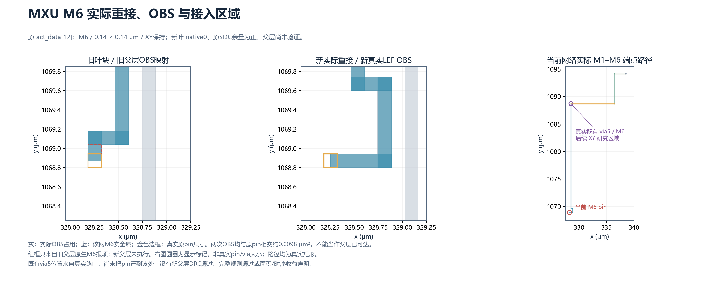
M6实际重接与OBS SVG。局部图同尺度；灰为实际占用OBS，红框仅属旧父层，本图采集时新父层未执行、后续93074结果另列；全网路径用实际原生矩形，没有虚构接入线。
93061 ELF地址诊断已完成，但根因未闭合：实际ELF最小LOAD基址0x200000，entry0x227f200；栈地址加该基址的末帧仍比entry早4054字节，未对齐_start，候选符号不能当准确故障定位。原/平移地址与完整输出分别保存；后续原guide/GRT上下文初始化只是独立能力试验，不称已找到或修复CloneMove根因。
770-edge适配试验92969前置失败：尚未路由。原生Verilog将两个外部时钟alias规范化为opentpu__clk/llaccel__clk，与编译中间wire名字不同；输入检查拒绝而非忽略。原失败保留，后续只接受这两个经唯一TOP_IO组件证明的精确alias，不改变真实连接。92968在新目录复用已完成SYSTEM合法化检查点，按名称查找实例的恢复修复真实运行；作业提交不是通过。
MXU父层接口合同另有真实失败：原生before/after全部2245条宏pin矩形记录比较发现，clk的USE从CLOCK变为SIGNAL；坐标/M6/尺寸、方向和网络一致，其余记录不变。旧回执的接口不变检查False保留，不能只看native进程0或native1就省略该回归。必须从真实RTL/SDC时钟合同修正原生物理视图及模型并重新核验，不只改最终LEF或把CLOCK检查删掉；当前新视图父层仍未通过。
LL SYSTEM三pin真实修复已闭合：native编辑/RCX/STA与fresh进程均0，fresh native由4降0；725253网/2325528端点/28517815形状所检连通、双PG、完整13507-pin层/尺寸/网络/方向与PG合同通过。恰好只删除八个WIRE矩形、所有via原样；其余725250条多端网矩形多重集相同，单端未用网/真实GDS仍不在该比较范围。0新单元/换型，原功能实例/位置/连接/PG/外框不变。setup/hold仍−3.909029/−0.587515ns、8876文字VIOLATED，整体FAILED。主矩阵选此native0新源，旧native4/旧窗口作业失败保留；新匹配抽象/RC模型已由93190闭合，父层接入仍待完成，不能继承旧父层或称六块完整物理资格通过。完整13507个实际pin逐项前后对应CSV。
ALL24767_actual_parent_track_geometry：已收齐终态。源SHA、原生返回及完整原文回执；完整资格仍未完成。
真实原R02六块父层24767pin逐项轨道审计：其余五块preferred中心未对齐数0，LL SYSTEM为13184；宏原点均已对齐实际pitch。bit_1025的M5 preferred中心偏移0.07μm；原网535条实际矩形/端点已取得，未编造端点。仅为几何风险，未对齐不等于无AP，仍须真实局部PG/OBS/via及父层接入检查。
全部24767父层信号pin逐项轨道CSV
LLSYSTEM_actual_NoAP_local_metals_PG_OBS：已收齐终态。源SHA、原生返回及完整原文回执；完整资格仍未完成。
MXU_native_clock_Liberty_binding_probe：已收齐终态。源SHA、原生返回及完整原文回执；完整资格仍未完成。
原生小探针真实记录：read_LEF后MTerm为SIGNAL，加载同源Liberty后变CLOCK，link及原2.5ns create_clock后保持CLOCK；旧/新源LEF均USE SIGNAL、Liberty均clock:true。这里只证明工具绑定阶段行为，不证明整父层修复；未手改USE或更改时钟。
LLSYSTEM_current_actual_tip_views：已收齐终态。源SHA、原生返回及完整原文回执；完整资格仍未完成。
93190此前三点源匹配视图已完成（最新bit1025变体另列）：原生默认/详细OBS抽象、DEF/网表及非零真实RC时序模型导出，独立模型重读0；13507信号位及全部原PG/层/尺寸/当前实际XY精确匹配，clean ODB与真实源SHA相同。原SPEF余量逐字重放−3.909029/−0.587515ns，仍失败；minimum_period规则缺项、父层/完整规则/功能资格未通过。此闭合回执独立追加，未改写R38快照时仍运行的记录。
UPPER_guard_API_r01：已收齐终态。源SHA、原生返回及完整原文回执；完整资格仍未完成。
UPPER_guard_API_r02：已收齐终态。源SHA、原生返回及完整原文回执；完整资格仍未完成。
UPPER_guard_API_r03：已收齐终态。源SHA、原生返回及完整原文回执；完整资格仍未完成。
适配器原生NDR接口探针：返回0，不是实际路由或DRC通过。r01的getLayerRules输出参数调用错误保留；r02正确读回M11/M12的0.8μm线宽/1.5μm间距并给全部770原网赋规则，但未指定的M1–M10 NDR spacing实际为0，未采用。r03显式给适配网全部12层NDR设置1.5μm hard spacing，实际仍只允许M11/M12路由、原下层材料不动；12层读回及全部770赋值通过。该额外保守约束及其成本与原profile分列，不是技术规则放宽、原pin升层、完整功能或制造签核。后续布线会同时执行带NDR和去除NDR元数据副本上的原技术规则独立fresh检查。
OpenROAD官方NDR文档；实际安装版本行为及Tcl body见原生log。
MXU_actual_tip_ECO_r01：已收齐终态。源SHA、原生返回及完整原文回执；完整资格仍未完成。
MXU_actual_tip_original_range_fresh_r01：已收齐终态。源SHA、原生返回及完整原文回执；完整资格仍未完成。
MXU_actual_tip_views_r01：已收齐终态。源SHA、原生返回及完整原文回执；完整资格仍未完成。
LLSYSTEM_bit1025_actual_tip_ECO_r01：已收齐终态。源SHA、原生返回及完整原文回执；完整资格仍未完成。
93205 LL bit_1025真实重接已收齐终态：仅此M5 pin接到原网既有via5帽、删除3条原末端WIRE；原先三点修复及完整13184-move内部C保留，全部13507位接口/原层/尺寸/功能/网络、单元/PG/外框保持。725253多端网所检几何连通、双PG/RCX/原STA执行，native与fresh进程0/fresh0，其余725252多端网矩形表示及全部via保持。setup/hold仍−3.909029/−0.587515ns、8876文字VIOLATED，整体FAILED。原共同下层bit1025无AP不能据此宣布解决；新匹配视图已由93240完成，真实父层仍待完成；不继承前三点源模型，主矩阵保留此前三点源作历史比较，新变体独立记录。
本变体全部13507实际pin对应CSV
LLSYSTEM_bit1025_actual_tip_views_r01：已收齐终态。源SHA、原生返回及完整原文回执；完整资格仍未完成。
93240 bit_1025最新实际源视图已完成：全部13507信号位和PG/原M5-M6/尺寸/当前实际XY精确匹配，clean ODB与真实新源SHA一致；默认及详细OBS、DEF、真实网表与非零提取Lib导出，模型独立重读0。SPEF余量逐字重放，setup/hold仍−3.909029/−0.587515ns，8876文字VIOLATED未消失；minimum_period覆盖仍缺，真实父层无AP、完整规则及功能未闭合。不把导出成功当时序或系统通过。
SYSTEM_current_actual_paths_r03：已收齐终态。源SHA、原生返回及完整原文回执；完整资格仍未完成。
opentpu_aux 当前真实源关键路径审计：原生0，原SDC/真实ODB/SPEF逐SHA绑定、setup及hold报表逐字重放；余量仍-0.056396/-0.119919ns。每组每延迟类型12条路径用于定位，非全路径枚举；完整原check-type报项另存。这里只读诊断，没有更改约束或消除原失败，不当ECO成功。
实际检查类型分列（采集范围内）：HOLD -0.119919ns；OUTPUT_MAX -0.056396ns。全局max/min字段历史名称保留；min可能包含removal，不能统一称普通hold。逐条真实路径/类型/来源SHA。
LLSYSTEM_current_actual_paths_r03：已收齐终态。源SHA、原生返回及完整原文回执；完整资格仍未完成。
llaccel_aux 当前真实源关键路径审计：原生0，原SDC/真实ODB/SPEF逐SHA绑定、setup及hold报表逐字重放；余量仍-3.909029/-0.587515ns。每组每延迟类型12条路径用于定位，非全路径枚举；完整原check-type报项另存。这里只读诊断，没有更改约束或消除原失败，不当ECO成功。
实际检查类型分列（采集范围内）：HOLD -0.340467ns；OUTPUT_MAX -3.909029ns；RECOVERY 2.212409ns；REMOVAL -0.587515ns。全局max/min字段历史名称保留；min可能包含removal，不能统一称普通hold。逐条真实路径/类型/来源SHA。
LLSYSTEM_full_window_terminal_92690：已收齐终态。源SHA、原生返回及完整原文回执；完整资格仍未完成。
92690/92691长期窗口试验已终态：92690源不变，13184个选定C pin已经迁移，移动阶段原cells/PG/die哈希一致；完整全信号/时钟重接在GRT-0116拥塞失败，没有routed.odb。92691原日志为NO_COMPLETED_ROUTE，clean导出/独立DRC/全网/RC/STA未执行，不是已有DRC结果失败。原工具GRT-0273时钟NDR警告亦保留，不以自动搜索行为宣称规则通过。旧快照的RUNNING只属当时观察，最新矩阵按本终态覆盖；此前PG-only/native0修复源与这次失败独立，未冒充新窗口通过。92691原文、源SHA与未执行范围。
UPPER_remaining_repair_r02：已收齐终态。源SHA、原生返回及完整原文回执；完整资格仍未完成。
93276残余涉网实际修复终态：独立native 10→2，仍失败。从闭合r01实际源请求剩余11个原支路，实际20条支路wire-box多重集改变，完整清单保留；复用逐SHA绑定的原guide。原生DRT、精确opcode重组和独立fresh进程均0。全部770支路/1540端点及514个重组网所检连通、原hook/M10材料/OBS、256条native FIXED及逐网固定桥必要性保持。8个间距报项本轮不再出现，仍有原两处M11 Short，异网隔离未通过；不把每网连通当系统连通或功能通过。原14→10→2历史完整保留，尚无完整下层冻结/两完整功能/RC/STA或收益结论；guard15独立作业不覆盖或取消。
NATIVE_RAM_capability_r01：已收齐终态。源SHA、原生返回及完整原文回执；完整资格仍未完成。
93305当前原生RAM能力核验完成：同一OpenROAD二进制与Nangate45库确实包含generate_ram，实际help/Tcl body/命令清单已按SHA归档；此处未生成存储器或GDS，未替换任何fake宏。原fakeram实际write函数只写LEF/Liberty/Verilog/blackbox四类文件，其源SHA与64×64逐bit mask/同步read-hold/同址写读X语义另存；不能补画假GDS当原源。现有工具可用于后续独立真实RAM物理试件，须先核对功能/延迟/掩码、实际尺寸、原pin目标层/尺寸和完整物理/RC/STA及ECO成本，才可考虑两侧一致的新实现变体。真实模型来源与待验合同；OpenROAD官方实验性RAM文档。文档支持范围不等于当前生成物已经通过。
UPPER_access_neighbors_terminal：已收齐终态。源SHA、原生返回及完整原文回执；完整资格仍未完成。
93302邻网/guide试验已失败：原生DRT、重组、独立fresh进程均0，但fresh仍两处M11 Short。请求7支路，实际23条wire-box网络改变；770支路/514重组网所检连通、256原生FIXED及逐网固定桥必要性保持。第一处marker从x=2438.095–2438.895μm移至2434.895–2435.695μm，第二处仍x=2465.295–2466.095μm；不是坐标完全相同的重复结果。扩大搜索提示并带入真实邻网仍未解决异网隔离，没有RC/STA或完整系统功能通过。原历史Short图保留其r01来源，不冒充本轮新几何。
COMMON_latest_actual_access_terminal：已收齐终态。源SHA、原生返回及完整原文回执；完整资格仍未完成。
93245最新实际pin父层终态失败：GRT通过，详细布线在u_llaccel_aux/bit_1073报DRT-0073（NoAP）。本轮选入真实MXU单tip及LL四tip视图，原bit_1025不再是首次报错，但不能据此证明其余pin均可访问。没有最终布线ODB、独立fresh、父层RC/STA或合格冻结；旧运行观察仅作历史。继续对当前源实际端点/金属/PG/OBS与整类接入条件诊断，不删除OBS或改变原pin层制造通过。
CURRENT_parent_actual_NoAP_context：已收齐终态。源SHA、原生返回及完整原文回执；完整资格仍未完成。
93330当前真实NoAP上下文已完成，只读原生0：当前bit_1073为M5 INPUT，原0.14μm正方形逐项保留；取得完整实际网577行及局部1847行，其中所选网8、PG321、其他/未归属1518。存在14条UNKNOWN宏变换占位，不能说所有OBS均已精确检查；候选own-via/轨道及父层AP修复尚未执行。所检源SHA均不变；导出成功不等于接入或DRC通过。
ALL13507_actual_own_via_caps_r01：已收齐终态。源SHA、原生返回及完整原文回执；完整资格仍未完成。
93333全部13507 pin的真实同网落脚审计完成：327位已在优选轨道中心，10261位在5μm L1范围内找到原同网via金属帽且M5/M6双轨道中心匹配，候选点重复0；2919位未找到这种有界候选。原源pin/net/layer/矩形与源SHA全部逐项保持，本次没有实施任何迁移。每个候选帽真实存在，不是画出的端点；但异网/PG/OBS、实际经过层的via/间距和父层AP仍需核查，不能据此宣布10261位可接入或合法。完整13507位原坐标/同网via/候选及保留原因（DBU=2000/μm）。
RAM_sync_wrapper_failed_r01：已收齐终态。源SHA、原生返回及完整原文回执；完整资格仍未完成。
RAM行为包装原试验提前失败，实际等价证明未完成：r01标识符转义、r02缺少wire重命名的模块上下文。原脚本/输入/日志均保留；属于驱动错误，不能误写为功能反例，也不删除后续证明断言。
RAM_sync_wrapper_failed_r02：已收齐终态。源SHA、原生返回及完整原文回执；完整资格仍未完成。
RAM行为包装原试验提前失败，实际等价证明未完成：r01标识符转义、r02缺少wire重命名的模块上下文。原脚本/输入/日志均保留；属于驱动错误，不能误写为功能反例，也不删除后续证明断言。
RAM_sync_wrapper_behavioral_r03：已收齐终态。源SHA、原生返回及完整原文回执；完整资格仍未完成。
93338显式同步读包装的行为模块等价已证明：以原真实fake模型及93317实际写出的异步RAM行为文件为输入，包装保留posedge读使能/保持、逐bit mask及同址写读X；原生Yosys证明4160个equiv均通过。64个实际elaboration内存字/4096位双射逐项核实后做状态命名匹配，未删除失败点或修改函数。范围限Yosys RTL语义及所述未定义初态/X条件，不是四态全仿真、物理RAM门级等价或完整设计证明。额外64位读输出寄存/使能与写mask成本尚未物理映射，原宏未替换；真实RAM路由/GDS/尺寸/pin层/完整规则及RC-STA仍待验证。
MXU_clock_bound_parent_recheck_r04：已收齐终态。源SHA、原生返回及完整原文回执；完整资格仍未完成。
实际整父层返回{'actual_view_swap_and_access_export': 0, 'fresh_DRC': 0}；fresh=1，完整2245条宏pin/网络/方向/层/USE合同=True。r02在native swapMaster发生Signal11，失败保留；r03改为先swap后绑定同一真实库，结果以该回执为准，不能以小探针代替。
93218持久时钟合同复查已闭合、整体仍失败：同源Liberty绑定后保存ODB，独立读回全部2245宏pin合同通过，修复了r03持久时钟USE证据缺项；fresh仍同一处M6 Short。所用仍为旧M6源，未重跑router/父层RC-STA，不代表最新真实via-tip源的父层通过；93239新源独立作业继续。
ALL13507_actual_via_then_wire_r02：已收齐终态。源SHA、原生返回及完整原文回执；完整资格仍未完成。
93352全量真实WIRE接点补查完成，只读：保留r01的10261个via候选及327个已居轨道中心pin；为原2919个未找到近邻via的pin另找到2832个真实同网WIRE内部的0.14μm双轨道接点，仍在5μm L1范围，候选点重复0。与源原矩形/层/net逐项核对，不统一平移，也没有把本轮候选写入物理源。仍87位无这种有界候选；它们不是可删除位。所有新点的异网/PG/OBS、真实via层级、父层AP与完整规则待验；不将13093个via/WIRE几何点称为物理接入完成。完整13507位及候选种类（DBU=2000/μm）。
LLSYSTEM_all87_actual_residual_peers：已收齐终态。源SHA、原生返回及完整原文回执；完整资格仍未完成。
93361剩余全部87位的真实连接已核实：每位均有原生dbWire、一个内部ITerm及一个顶层BTerm；已导出实际实例/端口/层/几何。不能将它们当未使用声明删除、跳过接入，或借旧多端网检查宣布其新接点合格。需要进一步沿原网寻找落脚或真实接入ECO；原层/尺寸/语义及所有位继续保留。
OBS_exact_union_installed_API_r01：已收齐终态。源SHA、原生返回及完整原文回执；完整资格仍未完成。
93345当前KLayout API探针完成：实际0.30.12能将含孔整数矩形并集分解为矩形，并以XOR空集重建；这只是已安装API的小样验证，不是源LEF、DRC或父层通过。实际M1–M3源OBS压缩93349另在独立目录运行，必须取得源/写出重读整数XOR、所有非目标字节/pin/尺寸不变及原生OpenDB逐矩形导入回执后才可使用。即使几何相同，router/DRC对分段的处理仍须实际验证，不删除障碍或放宽规则。
OBS_actual_exact_union_import_r01：已收齐终态。源SHA、原生返回及完整原文回执；完整资格仍未完成。
93349真实OBS几何压缩及原生导入已完成：源是闭合四tip版本，不是活动10261-pin源。M1–M3逐层原并集与矩形分解/写出重读的整数XOR均为空，目标RECT之外所有原字节保留；原/新LEF分别原生导入，13507信号接口及PG/pin方向/USE/层/尺寸完全一致，新矩形多重集导入精确。M1矩形17025623→14242709，M2 4309362→4309362，M3 2234357→2185782；仅表示对象分解数量减少，占用几何不变，不是释放金属/面积/拥塞收益。大LEF/原生OBS留远程SHA索引，回执及pin导入原文已归档。尚未验证router/DRC对新分段的处理、父层AP/实际布线或RC-STA，未推广到当前叶块/底座，更不是缺失SRAM GDS的替代品。
GUIDE_metadata_control_r01_counter_invalid：已收齐终态。源SHA、原生返回及完整原文回执；完整资格仍未完成。
93363旧guide对照的计数字段无效：after-access导出脚本覆盖全局count，原回执original_guide_count=1不是实际guide数量，不能用于规模/性能判断。原生日志实际11115→0，物理导出和两Short对照结果保留，但原计数不修改、不当作有效计数证明。93365在新目录保护变量并增加独立原生日志一致性断言，结果分列。
GUIDE_metadata_control_r02：已收齐终态。源SHA、原生返回及完整原文回执；完整资格仍未完成。
93365真实guide元数据对照已完成：只在新副本删除11115个dbGuide对象，独立原生读回0；770网全部WIRE/VIA/端点导出逐字节相同，pin/cell/PG/外框及OBS保持。两份隔离进程使用同一DRC命令及M11–M12范围，均保留相同两Short，marker逐字节一致，未删物理对象或规则。原/无guide检查分别约3.264/3.307秒，本小样没有可依赖的加速结论；不是加速了当前全叶块或解除了短路。它只支持继续对当前6,191,783-guide叶块做隔离的元数据变量试验；该全叶检查脚本已准备，尚未提交，原93343失败终态保留，不重提或覆盖。完整RC/STA、父层AP与系统资格仍未完成。
LLSYSTEM_actual_10261_access_ECO_r01：已收齐终态。源SHA、原生返回及完整原文回执；完整资格仍未完成。
93343已收齐终态，整体FAILED：原生编辑/独立fresh/RC-STA进程均0，13507位原层/尺寸/方向/逐bit网络、原单元/连接/PG/外框合同及双PG通过；725253网/2325528端点/28517812形状所检连通，全网原WIRE/VIA矩形多重集保持。但fresh出现两项同网bit_433的M5 Metal Spacing，max/min仍−3.909029/−0.587515ns、8875文字VIOLATED；不能因过程0、全网连通或少一条marker称物理/时序通过。0新单元/换型，10261个真实内部接点不撤回边界；主矩阵保留native0旧源，此新native2变体单列，不冒充已合格视图。父层AP/完整规则/GDS/RTL未验。实际完整13507位原生前后坐标/属性CSV（不是候选表）。
LLSYSTEM_old_pin_metal_spacing_diagnosis_r01：已收齐终态。源SHA、原生返回及完整原文回执；完整资格仍未完成。
93366实际几何诊断：bit_433前后各71行，WIRE/VIA及内部端点完全相同，但旧BPin移走后原位置实际少19600 DBU²=0.0049μm²金属，证明“WIRE/VIA没变”不等于全部导体占用没变。两项同网间距报项位于该局部。找到一条原M5线尾可延长0.115μm，其新矩形并集精确等于原线加旧pin占用；这是候选局部修复，尚未执行或DRC证明，不恢复旧pin位置、不移动新接点/层/通孔，也不改架构。保留此失败与真实坐标，继续原生修复。
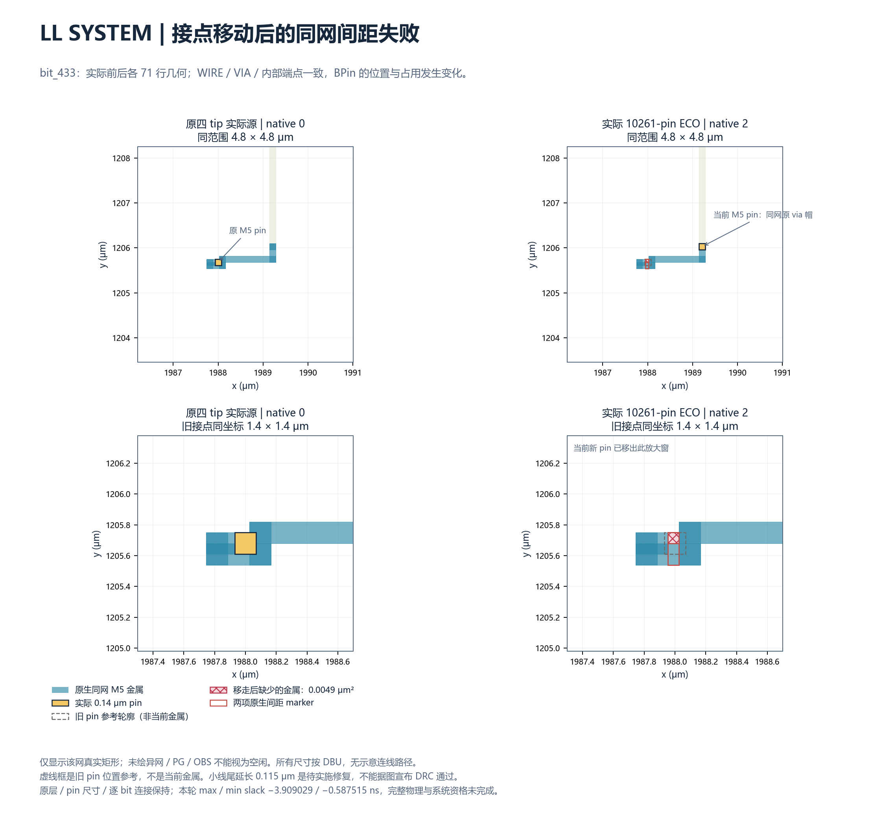
第38组真实前后图：同坐标/尺度，pin为原生0.14μm；粉色仅标记移走后少掉的旧pin金属，虚线是旧位置参考，不是当前金属。背景只含本信号网，不把未绘的PG/异网/OBS视为空白。修复未实施。SVG · 图的来源/精确面积与原生markerMXU_clock_bound_parent_recheck_r02：已收齐终态。源SHA、原生返回及完整原文回执；完整资格仍未完成。
实际整父层返回{'actual_view_swap_and_access_export': -11}；fresh=None，完整2245条宏pin/网络/方向/层/USE合同=None。r02在native swapMaster发生Signal11，失败保留；r03改为先swap后绑定同一真实库，结果以该回执为准，不能以小探针代替。
MXU_clock_bound_parent_recheck_r03：已收齐终态。源SHA、原生返回及完整原文回执；完整资格仍未完成。
实际整父层返回{'actual_view_swap_and_access_export': 0, 'fresh_DRC': 0}；fresh=1，完整2245条宏pin/网络/方向/层/USE合同=True。r02在native swapMaster发生Signal11，失败保留；r03改为先swap后绑定同一真实库，结果以该回执为准，不能以小探针代替。
93197已终态失败：2172网/4344端点所检几何连通及双PG命令通过，fresh仍1项；1916网为真实零长度直接接触，非已提取RC证明。此轮保存ODB在Liberty绑定之前，持久视图的时钟USE合同未证明；93218独立r04及93239新实际M6源父层继续，其结果不得继承。r03未重新运行router，父层RC/STA未执行，不能称当前新tip父层完成。
MXU_actual_tip_parent_r01：已收齐终态。源SHA、原生返回及完整原文回执；完整资格仍未完成。
PIN_metal_encoding_failed_r01：已收齐终态。源SHA、原生返回及完整原文回执；完整资格仍未完成。
PIN_metal_encoding_r02：已收齐终态。源SHA、原生返回及完整原文回执；完整资格仍未完成。
LLSYSTEM_full_guide_metadata_control_r01：已收齐终态。源SHA、原生返回及完整原文回执；完整资格仍未完成。
MXU_actual_parent_RC_STA_r01：已收齐终态。源SHA、原生返回及完整原文回执；完整资格仍未完成。
WIRE_shape_coverage_API_r01：已收齐终态。源SHA、原生返回及完整原文回执；完整资格仍未完成。
WIRE_native_binding_inventory_r02：已收齐终态。源SHA、原生返回及完整原文回执；完整资格仍未完成。
WIRE_native_RECT_decoder_r03：已收齐终态。源SHA、原生返回及完整原文回执；完整资格仍未完成。
UPPER_local_bypass_search_r01：已收齐终态。源SHA、原生返回及完整原文回执；完整资格仍未完成。
MXU：M6实际pin/via落脚重接及原范围独立检查已闭合
仅act_data[12] XY由(328.255,1068.870)移到原网via5的M6帽(328.535,1088.710)μm，原M6/0.14μm正方形/网络/方向/功能保持；删除4条实际末端M6 WIRE，全部via及其余191437多端网矩形表示不变，0新单元/换型，继承原1次换型成本。全2172信号pin/PG/单元/连接/外框合同、全网所检连通、双PG、RCX/原STA已完成，setup/hold仍0.246690/0.038538ns，不声称系统收益。
首次fresh驱动误用M2–M8，DRT-0155拒绝源已有M9 guide，没有实际DRC结果；原失败原样保留。93223只复用同一闭合实际ODB/SPEF，按原源fresh.tcl逐SHA/文本核实的M2–M10信号、M4–M10时钟范围独立检查，native0/fresh0，未重做接线/提取或放宽原源规则。93228当前源匹配默认/详细OBS、真实网表与RC模型已完成，2172信号及PG/当前XY/尺寸匹配、原SPEF余量逐字重放，minimum_period规则仍缺项。
新位置不是已验证的父层空闲点：M6详细OBS仍有真实同网via帽矩形与整个0.14μm pin重合（0.0196μm²），没有剪去占用；它对实际父层接入的影响仍待原生布线和分层规则核验。旧父层native1/时钟标签失败不继承为新源通过；完整GDS/SRAM/规则/RTL/共同冻结未完成。
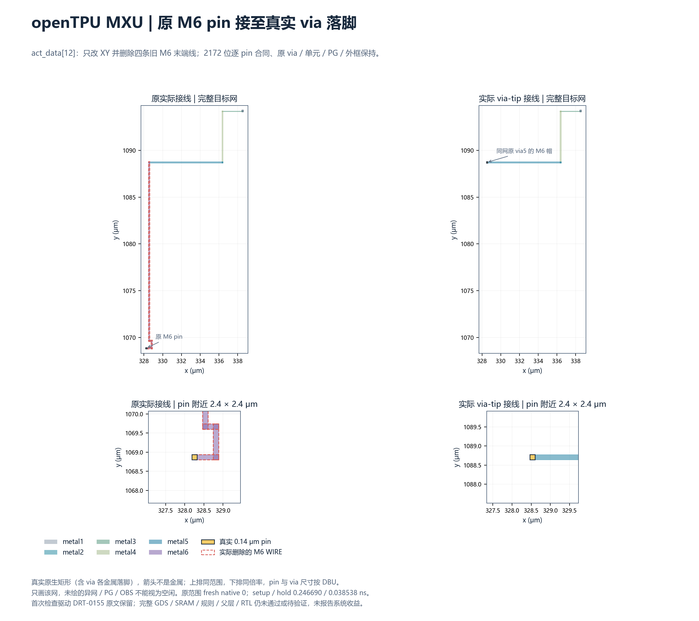
SVG · 真实来源/坐标/范围 · 完整2172个实际pin逐项对应CSV
适配层残余 Short：实际 M11 金属与接入帽逐项定位
闭合upper_branch_repair/r01/llaccel有2处Short及8处间距报项。243/248处异网WIRE与via10的M11帽交叠；199/206处是两条M11 WIRE实际交叉，不能都称via落脚冲突。两处实际交叠均0.8×0.8μm、0.64μm²，逐整数矩形计算并与原生DRC marker精确对应；不是示意路径。原770支路连通与256固定桥逐网必要性不替代异网隔离，当前仍失败。
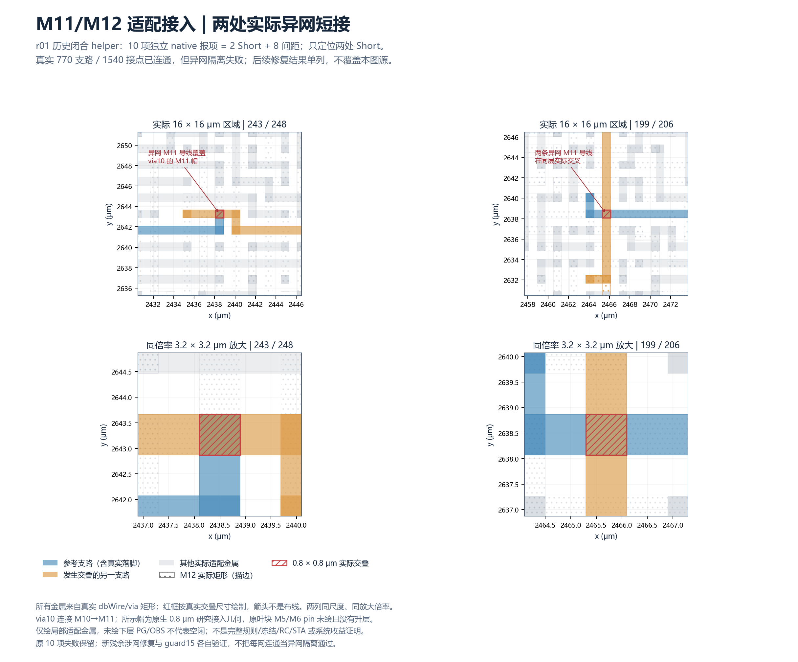
SVG · 逐矩形/原生DRC/源SHA。上层0.8μm施工接点与原叶块M5/M6 pin不同，未把原pin升层；下层PG/OBS未绘不代表空闲。新r02/93276已将独立native报项从10降至2，仍为图中同坐标的两处Short；本图保留r01历史几何，当前结果及源原文分别列出。guard15独立记录，未宣称RC或完整系统通过。
优化周边方案的真实共同底座试验已启动：93243采用独立boundary-r01/Aopt目录，同六块资源、3651.2×5913.6μm外框及256×32μm真实固定M10预连拓扑/预算；全部24767个源pin逐项检查边界坐标，实际执行布局、PDN、CuGR/DRT与独立检查。提交/运行不等于布线完成；Aopt与当前C的源epoch及既有ECO成本不同，现阶段只作集成问题对照，不能计算最终纯XY收益。两侧合格冻结/完整功能/RC-STA仍未完成。提交SHA、作业与公平性限制。
新增实际接入93245及终态审计93247/93248：93245在独立actual-access-tips-r01/C使用最新MXU/LL真实视图，逐pin保留原层/尺寸/功能/PG并索引实际XY差异；其他源epoch差异单列。它重新构造/布线共同父层以验证旧NoAP是否消除，最新93245已在bit_1073失败，未取得物理完成证据，不继承旧源结果。带时间的真实提交/活动/依赖与已结束作业回执；该观察不是持续实时状态，不能把RUNNING当通过。六块完整资格/共同合格冻结/两完整功能/公平系统收益仍未完成。
LL当前源的定向真实buffer迁移93269：根据原SDC/SPEF审计的12个负余量输出，已选择38个原有私有恒等buffer、执行几何隔离进程的迁移和diamond合法化；原功能cell/master/连接与未选单元位置合同通过，0新功能单元/换型的请求独立记录。完整13507 pin/PG/外框、全网与原层集合仍须在后续实际DRT/fresh/RC/STA核验；当前路由在运行，不能当时序修复成功，也不改原内部pin XY或把min removal称普通hold。新试验冻结驱动、真实阶段和调度观察。原未合格共同底座及两完整功能目标仍继续。
实际局部搜索与邻网/guide试验93302：在r02闭合真实金属/OBS上，单线段及有限邻段保守网格搜索未找到绕行，不是不可布通证明；未把候选路径写成真实接线。M11冲突段出口处的M12阻挡导线已逐矩形定位到128/129/201三条支路。本轮将残余涉网及这三条邻网合计7支路纳入原生重接，121个M11/M12 guide矩形各向外扩4个真实GCell（每边11.4μm）；M10 guide及其他支路guide逐项保持，技术/间距/原pin/固定导体拓扑不改。guide是搜索提示，实际后验M10材料、770/514连通、256固定桥与fresh仍须通过；R44观察时仍运行；最新93302终态已失败，不继承旧源通过。来源/范围/原guide与候选guide · 三条实际阻挡导线坐标。
R44带时间的实际提交、运行/终态观察。93217/93239/93243/93245/93269等原作业保持，93302新邻网试验与93305能力探针分列；提交/探针成功均不等于完整物理实现。
R45更新优先于旧运行观察：93245已NoAP bit_1073失败，93302仍两Short失败，93197旧MXU源父层fresh1失败，原生回执均已无损归档。新93330读取当前真实源完整错误网络及局部金属/PG/OBS，不修改物理源。93317已实际生成64×64/1r1w/mask1物理试件并进入原生DRT，但仍在运行，未获得完成的RAM/GDS/兼容或时序证明；原fake宏不替换。带时间的真实调度、冻结驱动和未验证范围。六块完整资格、共同合格冻结、两完整功能和公平系统对照继续未完成。
真实RAM试件已发现功能合同差异：93317运行中写出的实际behavioral.v是异步、无读使能的Q=mem[addr]，原fake模型为posedge读使能/保持及同址写读X，不能直接替换。显式读保持/使能包装的RTL行为证明现已完成（见93338）；物理映射、核心门级等价及成本仍未验证。原生日志还保留无tapcell、垂直PG pitch及4097时钟扇出警告；原生DRT仍无终态，不能把生成命令运行当完成。544.16/91μm仅日志pin范围，不是最终die实测尺寸或资源兼容证明。运行中实际行为文件原文、SHA、语义差异与警告。原ACT/MXU缺失GDS和完整规则缺口继续保留，不补画或替换原源。
R46最新状态：93333全13507位落脚审计、93338显式包装的4160点RTL行为等价及93218持久2245 pin合同已闭合，后者fresh仍1项Short失败。93317实际RAM详细布线及93239/93243/93269/93217等保持原作业；没有任何新共同底座冻结或两完整功能验收。下一步以原生数据库实施有真实同网金属依据的接点ECO，并独立验证完整pin/连通/PG/native/RC/STA及父层AP，不能把10261个几何候选当物理通过。带时间的实际终态和运行观察。
R47实际接点ECO正在验证，不能当完整接入：93343驱动已实际完成10261个同网帽上的原生ODB pin编辑，13507位pin合同及原单元/连接/PG/外框前后核对、VDD/VSS原生命令均已执行；独立fresh、完整导出图的连通判定、全WIRE/VIA多重集及RC/STA尚未闭合，父层AP未验证。原线/stub不删除，不报告线长/面积/时序收益。活动回执仅复制为带时间的运行观察，绝不伪造completed_utc或终态文件索引。运行观察、冻结驱动及真实阶段 · 当时原始活动回执（非终态）。
R47早先观察中的93349运行状态现由已归档终态覆盖：几何并集/非目标字节及OpenDB逐矩形导入通过，router/DRC/父层AP兼容仍未验证；未推广当前93343或底座，旧/新pin epoch分别记录。
R48带时间的终态/活动观察及guide计数错误诊断。小样两Short原样保留、没有性能收益声明；全叶guide-free副本尚未执行，不能以准备或小样成功替代实际全块验证。六块资格/共同合格冻结/两完整功能及公平系统对照保持未完成。
最新终态覆盖旧运行观察：93343已因native2/负时序失败，原R47活动JSON仅是当时快照。全块guide-free对照会使用其已完成的真实失败作为控制，保留原DRC结果；之后只有对照物理导出和原生marker完全相同，才允许尝试上述单M5线尾修复。最新93374控制已闭合，93375已开始实际修复；以R49段落覆盖旧运行状态，尚不称修复通过。
R49：MXU 当前实际源的完整父层接入已闭合，RC/STA待验
93239完成真实增量GRT/DRT及独立native检查，旧1项违规变为0。新叶ODB 848f8044、2172信号网/4344端点/9302导出形状所检连通，VDD/VSS执行，全部2245宏端口含PG及clock USE在独立进程读回。仅act_data[12]的授权XY改变，原功能/层/尺寸/方向/网络保持；实际只改变该父网wire-box，父pin/PG/外框保持。旧“全部XY完全不变”字段为false符合本次授权，不能拿它当接口合同失败。
1916条直接接触零WIRE网仍须保留寄生覆盖告警。父层RC/STA尚未执行；已补可重跑脚本，使用该实际源模型、原SDC/时钟和明确新增的研究I/O负载2/10/50，读取工具原生单位，不冒充历史约束。新增父M10目标保持，历史逐pin目标层仍有未知；缺四类SRAM真实GDS、完整规则及RTL资格不消失。旧父层native1/时钟失败作为历史保留，不将native0写成系统合格。
LL SYSTEM 全叶控制终态：原两项间距失败原样保留
93374已闭合：6191783个guide元数据在独立副本中清除，原pin/cell/PG/die、OBS及当前导出器覆盖的WIRE/VIA/端点逐字节一致；原M2–M8信号/M4–M8时钟范围与完整native检查保留。独立native仍2项bit_433 Metal Spacing，marker与93343逐字节一致。Slurm FAILED1是保留这两项物理失败的门槛结果，非工具崩溃，也没有通过或速度收益声明。93375已通过前置控制开始单M5线尾实际恢复，保留10261个内部接点；修复结果仍待独立DRC/RC/STA终态。
已确认的几何导出覆盖缺口：原生RECT金属
93382独立小样中POINT_PAIR及RECT_OPCODE均实际成功，原生DEF分别含零长度ROUTED段与RECT(-140,-140,140,140)，原M5/2000 DBU每μm。现有dbWirePathItr导出仅得到前者0.14μm正方形，却漏报后者；不是RECT调用失败或“无金属”。ODB独立读回仍复现。该探针不是叶块修复、GDS或DRC通过证明。
覆盖更正：既有几何连通与WIRE/VIA相等结论只覆盖当前导出器实际输出，尚未证明其包含所有RECT/patch metal。native DRC仍由原数据库全量检查，不受该导出器漏项影响；原DRC失败、RC和STA原样保留。对六叶/父层/适配层的RECT库存及完整形状导出需补查，在完成前不把“所检连通”扩写为全部导体或GDS LVS通过。已准备dbWireShapeItr独立只读能力探针，尚未推广新导出器。93381确实运行后因Tcl换行序列化失败，未取消；原失败回执保留。
原生DEF两条记录、文件SHA、成功状态及覆盖边界。此项不推翻native检查，但阻止未经补查的完整金属覆盖声明。
R50：MXU 父层已真实提取，负min余量阻止通过
93386使用93239当前实际父ODB及准确模型完成RCX、SPEF写出/读回、原2.5ns时钟和完整适用STA命令。工具原生report_units确认time=1ns、capacitance=1fF，负载2/10/50确实为fF。setup分别0.241270/0.221837/0.125666ns；min均−0.333124ns，原生check_types文字VIOLATED分别0/3/113，文字标记数不是完整失败数。即使2fF检查类型未列文字违规，独立worst min为负仍失败。已读原生critical路径：b_rdata[91]输入到u_macro的clk组min路径，library hold time=0.460480ns、arrival=0.127356ns，差为−0.333124ns，证实本项确为hold；并非刚移动的act_data[12]。不把研究I/O最小到达0.125ns合同失败直接解释为完整系统失败或纯pin XY代价。
Slurm FAILED1保留真实时序失败；native进程0及父DRC0均不构成合格。1916零WIRE直接接触网、minimum_period缺项、非历史研究I/O约束以及完整系统/规则/GDS/RTL限制继续保留。未保存或提升RCX后物理ODB，物理源不改；此处是实际父夹具提取结果，不是完整系统收益。
完整形状接口探针实际失败，不能凭文档假设安装能力
93387只读小样实际运行：当前OpenROAD Tcl没有odb::dbWireShapeItr命令，原生invalid command name返回1。没有修改任何叶块或物理源，没有推广新导出器。RECT漏项仍未闭合；下一步需发现当前二进制真实绑定的解码/形状API或补充原生DEF RECT解析审计，先在已知小样交叉验证，再审计六叶/父层/适配层。不会重复无变化的同一接口调用。
R51：当前原生解码接口库存已取得，RECT覆盖仍待验证
93390只读真实小样，安装Tcl确认存在dbWireDecoder、getRect/getPoint/getLayer/next，以及dbWire_getOpcode/getData/getShape绑定；dbWireShapeItr不存在。3项原始回执按源码/二进制/输入及输出SHA保存。此库存只证明接口存在，不证明RECT坐标语义、完整patch库存、连通或DRC通过。新decoder_rect探针只对已知PATH/POINT/RECT三操作的原生小样读取，不凭空假设枚举值，不改叶块或活动驱动；先独立交叉核对再扩展全部物理源。
93375已完成真实M5线尾编辑/分析进程，仍等待完整独立native及RC/STA终态，保留10261接点与原失败；原共同底座/适配层/RAM作业继续，不重复提交或按耗时取消。六块完整资格、共同冻结、两完整功能与公平系统比较仍未完成。
R52：原生RECT枚举已识别，但矩形读取调用失败
93393原生进程0，只表示已捕获探针结果；实际decoder依次读到PATH=0、POINT=4、RECT=8，枚举值取自当前原生变量，非编造编号。POINT坐标3976000/2411360 DBU及metal5正确；getRect要求四个deltaX1/deltaY1/deltaX2/deltaY2参数，零参数调用实际失败。未取得矩形坐标，不能称RECT覆盖修复或完整几何通过。下一步仅在相同闭合小样核对当前绑定的length/getOpcode/getData及可用int输出句柄，禁止传空指针冒险，不修改任何叶块或活动源。
两处适配层Short的局部绕行搜索实际失败
93394使用闭合upper_branch_repair/r02/llaccel的全部导出支路及实际OBS，只搜索M11/M12，原固定M10、via10与hook不改。src[248]在12/24/48/96μm窗口均仅扩展11个可达节点，无路径；联动src[129]/src[201]两条实际M12端点阻挡线、尝试两种顺序和12/24/48μm窗口，最多23节点仍失败。此前没有实际编辑成功，不重复扩大同一窗口。该有限保守矩形搜索不是不可布通证明，RECT覆盖/完整规则尚缺，需进一步核查端点阻挡及更完整的相关段联动；src[206]未搜索，不冒称两处都已验证不可行。原独立native两Short仍保留，原guard15活动路由不干扰。
真实端点阻挡补查：src[248]所选M11线起点中心(2435.295,2643.270)μm是原via10落脚；同XY的M12被src[201]真实WIRE占据，另一端M12被src[129]占据。src[206]另一端也有src[128]的M12 WIRE。完整逐端点/邻步/实际矩形和原源SHA见端点金属阻挡审计，由可复用audit_upper_bypass_endpoints.py生成。该审计只查导出的金属间距，不检查cut11或完整规则，不能推断全部绕行不可行。原搜索还固定了已有via11，后续可研究相关上层段及via11联动，固定via10和M1–M10仍须保持；当前尚未实际重接。
92997实际研究视图已导出：与658diode确定源逐SHA绑定的clean ODB、LEF/OBS、DEF、真实网表和非零提取时序Lib已生成；3753个signal pin及PG/尺寸/原M5/M6与原真实接口完全一致，SPEF余量精确重放、独立模型重读通过。minimum_period存在=False，完整规则/RTL/新父层可达性及系统资格未闭合，不能当合格冻结。大视图、SPEF与工具/配置由终态回执逐SHA索引，未用最终LEF坐标修改冒充真实接线。
92975定向22个新增真实diode：原层接线/详细布线、原视图合同、双PG及RCX/STA原生命令均已执行；闭合原生进程报告setup/hold=0.770702/0.039533ns，文字违例=0。独立fresh DRC、全量数字图及源合同以最终receipt各自为准，未终态不记0/通过。92976为对应严格GDS原deck依赖作业；不把提交视为规则通过。旧37项原样保留。
92975最终回执：fresh native=0，全量22新增负载数字合同=True，原pose/端点=True。无论Slurm结局，完整规则/RTL/系统资格仍未通过。
VECTOR只读库表诊断：实际关键路径141段cell arc合计6.7401ns；FA_X1/HA_X1/OAI33_X1在当前同函数系列无更大驱动型号。逐arc表格最小值混合不同slew/负载/跳变/条件，不是可同时实现的STA，也不是零线延迟下界或不可行证明；原约束与物理输入未改变。141段实际master/arc及库表CSV。
92985按三份真实几何SHA检查全部268637条网：两换型阶段有15条网的WIRE/VIA矩形多重集表示不同；再增22个diode后为77条，其中22目标网、2条原636已保护网、53条其他网；其余268560条矩形表示完全一致。证明不能把增量DRT说成只重布22网。不同表示可能包含切段/重复差异，不直接等于几何并集、线长或RC变化；完整逐网digest表留授权远程存储并有SHA。
92976真实658diode版严格GDS已终态：merge=0，未改原deck return=0，实际报项=0。以实际源DEF/GDS/RDB SHA绑定，原1460和两个37项版本分别保留。该新版本原可用deck零项不代表完整制造规则、RTL形式、父层或系统资格；原WELL/via enclosure等覆盖缺口及其他块缺真实SRAM GDS不消失。
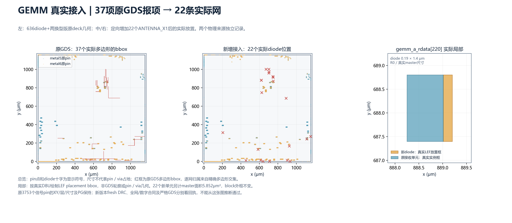
真实diode接入SVG · 实际来源及局部receiver。总览符号为定位标记，局部为真实LEF placement bbox；非pin/via/GDS轮廓。独立物理验证阶段
小区域对照固定同一8个pin，其余pin保持原始位置；A读取原始边界，Aopt只在相同边/相同层的原有8个边界槽位内做分配优化，B/C采用相应候选坐标。Aopt使用C中心作端点导向代理成本，不能称为全局最优边界。place_pin真实写入ODB并核对中心和原层/尺寸；只清除相关网络原dbWire，然后实际global_route/detail_route。保留原单元与宏位置、规格、CTS和PDN，不删OBS、不修驱动掩盖XY成本。
A_replay保持原XY但重新接同一组网络，区分重跑布线本身影响。后续ACT完整740-pin C的独立对照另用fullC-r01记录，B只取同一740-pin cohort，不能冒充完整859-pin B；其实际阶段以回执为准。
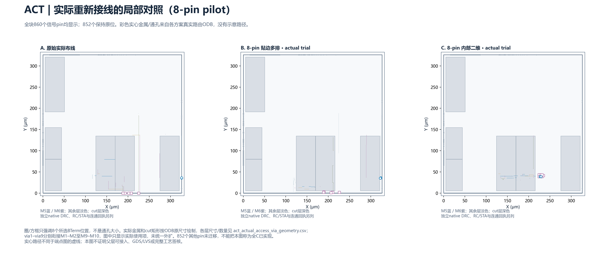
实际接入SVG · 实际via cut层尺寸/数量；尺寸来自实际路由数据库，不是最大层通用间距假设。
实际发现并隔离的工具问题：当前OpenRCX提取后保存的ODB重新读入，会产生大量native DRC冲突；ACT逐阶段试验确认读写/加载/约束前DRC=0，extract后ODB重读报12534项。旧checked.odb不作为物理母本。使用提取前routed.odb（A用原始ODB）在新进程导出clean.odb、视图并独立DRC/全块连通；clean与提取前输入逐字节一致。SPEF/STA保留其同一提取前来源，并明确系统边界不完整。全部旧失败和分析状态诊断保留，未降低规则。
新增四块另按实际0.005μm制造网格修订候选r02，最大轴向修正均小于0.0025μm；保留原r01逐pin坐标/指标及被place_pin对齐的失败。此为已在内部的二维候选之网格修正，不是把边缘微移伪装成内部二维。实际试验采用原相同8pin cohort重试，层/方向/连接语义不变。
DRT完成、独立clean进程native DRC、全块几何连通、PDN、OpenRCX、setup/hold/电气检查分别记录；命令执行成功不等于各规则通过。继承baseline未通过项继续保留。精确阶段、失败与工具输出见物理回执；原始大型ODB/DEF/SPEF留在授权独立远程目录，输出SHA索引见execution.json。
ACT同组740-pin实际对照
这是DRT在RCX前输出的真实路由统计，按工具口径计数，区别于几何L1及RC/STA。单次匹配试验中C线长约−6.40%、via约−1.70%，远小于几何L1的−42.4%；setup余量略变差，没有时序改善结论。B仅为相同740-pin子集。A原边界已通过native DRC和所检OpenDB连通；C提供内部线长的额外价值，父层代价/通道和完整规则仍未知，外框未缩小。
完整C同组实际边界 / Aopt / B / C对照
只列已产生完整执行回执的试验；待验证检查项不是0。B只迁移原C同组，Aopt仅优化原边/原层槽位，不是全局最优边界。修订C仍重接相同cohort，但按真实byte/lane保留部分pin。GEMM修订C线长4548300μm，相对原XY控制4494984μm约+1.19%；MXU修订C3132185μm，相对3003026μm约+4.30%，两者边界和内部方案均继续保留，局部成本不决定系统取舍。端点L1减少并未变成实际块内线长收益；父层/通道影响尚未知。ACT同组C约−6.40%，仍需父层和完整规则证据。逐层线长、失败明细及资格边界见物理回执；原基线失败保留。大型原始JSON和工具文本无损gzip保存，原文件名/字节数/SHA与压缩路径映射可追溯，未删原始检查内容。
独立GDS合并与现有规则deck：实际失败不隐藏
规则分类、原始日志与SHA索引。没有豁免缺失宏，也没有关闭FEOL、BEOL、off-grid或antenna检查。ACT的两个fakeram缺少匹配GDS；原始/C诊断布局均不完整，其678/770项目前均为天线类别，不能据此签核完整设计，或直接把差值归因于XY变化。native DRC=0和该deck结果必须分别记录。
实际RC/STA路径上的负载与转换时间
来自native OpenSTA JSON的SI单位F/s，转换为fF/ps；只是被报告路径点的观察最大值，路径点可能重复、集合可能变化，不是全部网络或完整系统电气覆盖。精确来源SHA、观察数量与最大值所在pin见上述目录的electrical_observations.json；原边界驱动/slew/load模型仍不完整。
导出LEF的同层PIN/OBS正面积相交诊断：原ACT782个、完整C777个（含PG口径），原始/C逐pin证据。这些相交可能包含同网连接形状，不能直接当作DRC违例或父层不可接入结论；也不能把灰色区域或LEF导出成功当作父层可达证明。尚需在版本匹配父层上检查具体via/handoff。
另冻结了完整C同组的原XY重布线、Aopt边界槽位优化和B子集控制。完整cohort/优化范围及逐块Aopt CSV.gz在同目录。Aopt只在原分束、原边、原层既有槽位内置换，使用C中心L1代理，未改变硬件分束语义；未知分束仍沿用展示假设，不是全局最优边界、真实布线成本或已完成物理结果。
真实失败驱动的增量混合C：完整逐pin补充表
原始A/B/C和PR120逐字节保留。GEMM原完整C的gemm_wr_wstrb[29]/[30]驱动电容超限；恢复两个真实完整字节（data232–247及strobe29/30，共18pin）到A，匹配3039pin重布线组，实际移动3021pin。MXU原完整C有3项signal-to-VDD short（pf_uv[109]、b_rdata[174]）及5项t_wdata lane0电容超限；整个33pin lane0保留A，两处M5内部点分别向左移1.12μm，仍属内部二维。匹配1964pin重布线组，实际移动1931pin。两次修订均保持单元、驱动、缓冲、原pin层/尺寸、PDN、边界及允许层。
GEMM全部3753pin增量C · GEMM字节证据 · MXU全部2172pin增量C · MXU修复证据。两修订独立native DRC均为0、全块所检多端几何连通通过，现有边界模型下setup/hold为正且电气报告0；完整GDS/LVS/父层和系统电气仍未通过。主A/B/C图和查询仍展示原候选，不与补充修订混淆。GEMM发布表修正恢复位的几何指标元数据，实际执行Tcl逐字节一致。
补建受控父层：独立新基线，历史层级仍未知
用户确认无额外历史handoff/宏GDS并授权补充后，依据冻结三叶块图创建NEW_CONTROLLED_PARENT_NOT_HISTORICAL。openTPU固定6618端点/3408网，37个独立LOGIC0_X1实现原TOP_IO常零声明（新增基础设施成本19.684μm²，各方案相同）；llaccel固定27050端点。叶端口保持原M5/M6，TOP_IO策略、M2–M10信号/M4–M10时钟、R0布局、轨道相位与新PG显式冻结。逐bit图/方向/层检查在PG和路由之前执行。端口占位Liberty只用于链接/路由，零电容不是表征值，禁止据此报告父层STA/负载资格。
早期halo、PG条带、默认过度bloat及标量bus映射失败均留证；修订为详细OBS原生导出、按实际层障碍选择新PG通孔、真实Verilog/Liberty bus映射。openTPU r07全部6618端点、llaccel全部27050端点均已核对，并分别通过前置双电源连通检查；两者均已终态失败：openTPU r07独立native11项，llaccel ll-r01在GRT拥塞失败；后续RC/STA物理门槛阻止执行。试验/合同索引；完整输入合同、Verilog、物理链接Liberty及逐端点表以gzip保留。原历史目标层仍UNKNOWN；新基线不追溯证明旧父层，也不补造SRAM器件GDS。
新增父层实际阶段索引。旧失败/主动停止的无效变体仍保留，未完成项绝非通过；完整原始日志/停止原因在physical证据目录。
llaccel SYSTEM完整C：实际固定PG直接冲突，保留失败
不是仅凭候选图判定：从真实place_pin后的moved.pins.tsv核对全部13507信号pin与完整C一致，原始/移动后PG指纹逐字节相同。26个信号pin与不可移动的VDD/VSS同层金属存在44对正面积直接相交；原几何导出ODB SHA与本次真实输入一致。固定pin与PG时，DRT不能消除此交叠，因此保存moved/ripped/global ODB、日志和证明后，只停止该已确认无效的新试验92369，其他作业和原数据库不改。13184pin完整C迁移已写入，但完整布线、独立终态DRC、RC/STA均未完成，不能用8pin局部结果代替。
全部逐矩形直接接触证明 · 冲突CSV · 全部实际移动后pin原始回读 · 仅停止新无效变体的守卫/回执。直接金属接触证明不是完整规则检查，未把间距风险或灰色背景当作真实短路。完整C当前不推荐；优先边界或严格筛选的少量内部簇。
基于实际SPEF导出的叶块研究时序模型
逐模型来源/SHA/实际导出及失败回执；原生timing.lib、逐port表、setup/hold/checks、约束/寄生覆盖及日志以无损gzip保存。六块A/C的12份模型全部导出，逐版完整核对原始信号pin清单和方向，SPEF重读最差setup/hold与原试验偏差均为0；另外ACT/MXU的原XY重布线/Aopt/B、GEMM原XY/Aopt等8份控制模型已补齐。每份模型使用与其路由版本匹配、SHA锁定的实际提取SPEF；仍是原研究库条件下的导出模型，非SRAM器件表征或完整签核库。llaccel SYSTEM C只对应8pin局部，完整C仍失败。Liberty的bus聚合声明及VDD/VSS不重复计作信号bit，旧探针的分类/元数据失败保留。
全部当前导出模型缺少minimum_period条目；外部输入/输出延时、驱动、slew、负载和真实SRAM资格仍有缺项。原叶块时序/电气失败必须单独保留，不能因父层模型没有该检查而消失。独立父层RC/STA作业92476/92477已终态：openTPU父层native11失败、llaccel父层GRT拥塞失败，物理来源门槛阻止后续RC/STA，未执行而非通过。该门槛仍要求独立native DRC/所检全块连通/PG和精确叶模型ODB及来源SHA匹配。旧四个尚未开始的分析作业已在严格核对pending且无输出后替换，保留调度回执，实际P&R作业不变。父层为明确的新2.5ns基准，外部I/O约束仍不完整；尚未执行，不写签核通过。RCX仅在独立分析进程中运行，不保存分析后ODB为物理母本。
原deck规则实现适用性：WELL.4 独立几何验证
安装的原deck把well.separation(well,200.nm)标为“最小井宽200nm”。独立KLayout实际执行表明：单个150nm窄井被原式漏检；两个宽井相隔150nm，原式报1，而宽度200nm/间距135nm参考均0。该表达式与井宽检查不等价。KLayout官方方法定义与六例GDS/原生检查/工具及源码SHA支持这一点。原始全量deck和所有计数保留，不把WELL.4项全部归因于XY或解释为真实宽度违规；也不把参考检查当完整DRC通过。实际完整llSYS A的原deck74761项中72975项为WELL.4；其余报告项、LVS、规则覆盖等仍需单独验证。
实际llSYS A专项参考 llaccel-A-well-reference-r02：原WELL.4计数是否复现=False；专项计数={'ORIGINAL_WELL4': 20505}。参考的井并集/逐mask范围和层级/tiling条件见回执。早期平坦参考与原deep/tiled全量计数不直接等同。原deck注明WELL.2未实现，via enclosure METALx.3/.4也有实现TODO，其适用性和完整规则覆盖尚未验证；不通过删除原检查制造通过。
实际llSYS A专项参考 llaccel-A-well-reference-r05：原WELL.4计数是否复现=False；专项计数={'ORIGINAL_WELL4': 73006, 'WIDTH200_REFERENCE': 0, 'SPACE135_REFERENCE': 0, 'NWELL_WIDTH200_REFERENCE': 0, 'PWELL_WIDTH200_REFERENCE': 0, 'NWELL_SPACE135_REFERENCE': 0, 'PWELL_SPACE135_REFERENCE': 0}。参考的井并集/逐mask范围和层级/tiling条件见回执。早期平坦参考与原deep/tiled全量计数不直接等同。原deck注明WELL.2未实现，via enclosure METALx.3/.4也有实现TODO，其适用性和完整规则覆盖尚未验证；不通过删除原检查制造通过。
物理阶段摘要（完整试验及原始回执见JSON索引）
{
"act": {
"full_C_migration_routed": true,
"whole_block_OpenDB_multi_terminal_geometry": true,
"complete_GDS_LVS_connectivity": "NOT_VERIFIED",
"parent_access": "UNKNOWN original handoff/target layers and version-matched parent paths",
"full_DRC_GDS_LVS": "NOT_QUALIFIED",
"full_system_RC_STA_electrical": "NOT_QUALIFIED",
"route_status": "选定740pin、实际移动740pin，C实际重接完成；原C全组已实施；完整父层/规则未资格化",
"original_full_C_trial_routed": true,
"current_variant": {
"candidate_revision": "r01_or_PR120",
"selected_cohort": 740,
"actual_moved_signal_pins": 740,
"raw_receipt": "milestone-r12\\trials\\fullC-r02\\act-C\\execution.json"
},
"drc_status": "独立clean进程DRC 0; selected-net连通 True; 全块几何连通 True；父层未验证",
"sta_status": "RCX True; setup 1.259268ns / hold 0.032872ns；时序/电气违例行0；系统边界不完整",
"matched_full_cohort_comparison": {
"scope": "Same original full-C cohort rerouted from identical source; revised C keeps whole byte/lane groups at A as explicitly listed. B is only this cohort, not full B. Aopt is a slot assignment using C-center L1 proxy, not a globally optimal boundary. Native stats only; no system PPA qualification. Missing gate values mean pending, never pass.",
"plans": {
"fullC-r01/A_replay": {
"selected_pin_count": 740,
"DRT_pre_RCX_wire_length_sum_um": 271186.0,
"DRT_pre_RCX_vias": 37557,
"setup_worst_slack_ns": 1.260067,
"hold_worst_slack_ns": 0.032419,
"independent_clean_DRC_count": 0,
"reported_timing_electrical_violator_rows": 0,
"actual_moved_pin_count": 0,
"whole_geometry_pass": true,
"wire_change_vs_same_cohort_A_replay_percent": 0.0,
"via_change_vs_same_cohort_A_replay_percent": 0.0
},
"full-controls-r04/Aopt": {
"selected_pin_count": 740,
"DRT_pre_RCX_wire_length_sum_um": 274481.0,
"DRT_pre_RCX_vias": 37465,
"setup_worst_slack_ns": 1.260067,
"hold_worst_slack_ns": 0.032377,
"independent_clean_DRC_count": 0,
"reported_timing_electrical_violator_rows": 0,
"actual_moved_pin_count": 698,
"whole_geometry_pass": true,
"wire_change_vs_same_cohort_A_replay_percent": 1.2150332244289963,
"via_change_vs_same_cohort_A_replay_percent": -0.2449609926245433
},
"fullBcohort-r01/B": {
"selected_pin_count": 740,
"DRT_pre_RCX_wire_length_sum_um": 271833.0,
"DRT_pre_RCX_vias": 37833,
"setup_worst_slack_ns": 1.25981,
"hold_worst_slack_ns": 0.032424,
"independent_clean_DRC_count": 0,
"reported_timing_electrical_violator_rows": 0,
"actual_moved_pin_count": 740,
"whole_geometry_pass": true,
"wire_change_vs_same_cohort_A_replay_percent": 0.23858163769516771,
"via_change_vs_same_cohort_A_replay_percent": 0.7348829778736299
},
"fullC-r02/C": {
"selected_pin_count": 740,
"DRT_pre_RCX_wire_length_sum_um": 253825.0,
"DRT_pre_RCX_vias": 36918,
"setup_worst_slack_ns": 1.259268,
"hold_worst_slack_ns": 0.032872,
"independent_clean_DRC_count": 0,
"reported_timing_electrical_violator_rows": 0,
"actual_moved_pin_count": 740,
"whole_geometry_pass": true,
"wire_change_vs_same_cohort_A_replay_percent": -6.401879153053624,
"via_change_vs_same_cohort_A_replay_percent": -1.7014138509465648
}
}
},
"matched_740pin_comparison": {
"scope": "Same 740 C-movable cohort, same source/resources/frame/layer set; B is subset of full859-pin B. DRT pre-RCX native statistics, one trial; not extracted RC or system PPA.",
"plans": {
"fullC-r01/A_replay": {
"selected_pins": 740,
"wire_length_um": 271186.0,
"via_count": 37557,
"wire_change_percent": 0.0,
"via_change_percent": 0.0,
"setup_worst_slack_ns": 1.260067,
"hold_worst_slack_ns": 0.032419
},
"full-controls-r04/Aopt": {
"selected_pins": 740,
"wire_length_um": 274481.0,
"via_count": 37465,
"wire_change_percent": 1.2150332244289963,
"via_change_percent": -0.2449609926245433,
"setup_worst_slack_ns": 1.260067,
"hold_worst_slack_ns": 0.032377
},
"fullBcohort-r01/B": {
"selected_pins": 740,
"wire_length_um": 271833.0,
"via_count": 37833,
"wire_change_percent": 0.23858163769516771,
"via_change_percent": 0.7348829778736299,
"setup_worst_slack_ns": 1.25981,
"hold_worst_slack_ns": 0.032424
},
"fullC-r02/C": {
"selected_pins": 740,
"wire_length_um": 253825.0,
"via_count": 36918,
"wire_change_percent": -6.401879153053624,
"via_change_percent": -1.7014138509465648,
"setup_worst_slack_ns": 1.259268,
"hold_worst_slack_ns": 0.032872
}
}
}
},
"mxu": {
"full_C_migration_routed": true,
"whole_block_OpenDB_multi_terminal_geometry": true,
"complete_GDS_LVS_connectivity": "NOT_VERIFIED",
"parent_access": "UNKNOWN original handoff/target layers and version-matched parent paths",
"full_DRC_GDS_LVS": "NOT_QUALIFIED",
"full_system_RC_STA_electrical": "NOT_QUALIFIED",
"route_status": "选定1964pin、实际移动1931pin，C实际重接完成；增量C_mxu_repair_r03，保留真实lane0且修复2个PG相交点",
"original_full_C_trial_routed": true,
"current_variant": {
"candidate_revision": "C_mxu_repair_r03",
"selected_cohort": 1964,
"actual_moved_signal_pins": 1931,
"raw_receipt": "milestone-r12\\trials\\mxu-repair-r03\\mxu-C\\execution.json"
},
"drc_status": "独立clean进程DRC 0; selected-net连通 True; 全块几何连通 True；父层未验证",
"sta_status": "RCX True; setup 0.247994ns / hold 0.048823ns；时序/电气违例行0；系统边界不完整",
"matched_full_cohort_comparison": {
"scope": "Same original full-C cohort rerouted from identical source; revised C keeps whole byte/lane groups at A as explicitly listed. B is only this cohort, not full B. Aopt is a slot assignment using C-center L1 proxy, not a globally optimal boundary. Native stats only; no system PPA qualification. Missing gate values mean pending, never pass.",
"plans": {
"full-controls-r04/A_replay": {
"selected_pin_count": 1964,
"DRT_pre_RCX_wire_length_sum_um": 3003026.0,
"DRT_pre_RCX_vias": 1198592,
"setup_worst_slack_ns": 0.248906,
"hold_worst_slack_ns": 0.054484,
"independent_clean_DRC_count": 0,
"reported_timing_electrical_violator_rows": 0,
"actual_moved_pin_count": 0,
"whole_geometry_pass": true,
"wire_change_vs_same_cohort_A_replay_percent": 0.0,
"via_change_vs_same_cohort_A_replay_percent": 0.0
},
"full-controls-r04/Aopt": {
"selected_pin_count": 1964,
"DRT_pre_RCX_wire_length_sum_um": 3064435.0,
"DRT_pre_RCX_vias": 1200121,
"setup_worst_slack_ns": 0.249095,
"hold_worst_slack_ns": 0.053259,
"independent_clean_DRC_count": 0,
"reported_timing_electrical_violator_rows": 0,
"actual_moved_pin_count": 1847,
"whole_geometry_pass": true,
"wire_change_vs_same_cohort_A_replay_percent": 2.044904040124851,
"via_change_vs_same_cohort_A_replay_percent": 0.12756634451089877
},
"full-controls-r04/B": {
"selected_pin_count": 1964,
"DRT_pre_RCX_wire_length_sum_um": 3032632.0,
"DRT_pre_RCX_vias": 1199697,
"setup_worst_slack_ns": 0.248519,
"hold_worst_slack_ns": 0.053328,
"independent_clean_DRC_count": 0,
"reported_timing_electrical_violator_rows": 21,
"actual_moved_pin_count": 1964,
"whole_geometry_pass": true,
"wire_change_vs_same_cohort_A_replay_percent": 0.9858722501903117,
"via_change_vs_same_cohort_A_replay_percent": 0.09219150469885751
},
"full-other-r01/C": {
"selected_pin_count": 1964,
"DRT_pre_RCX_wire_length_sum_um": 3145240.0,
"DRT_pre_RCX_vias": 1202829,
"setup_worst_slack_ns": 0.245821,
"hold_worst_slack_ns": 0.048919,
"independent_clean_DRC_count": 3,
"reported_timing_electrical_violator_rows": 5,
"actual_moved_pin_count": 1964,
"whole_geometry_pass": true,
"wire_change_vs_same_cohort_A_replay_percent": 4.735689934086484,
"via_change_vs_same_cohort_A_replay_percent": 0.35349810444254004
},
"mxu-repair-r03/C": {
"selected_pin_count": 1964,
"DRT_pre_RCX_wire_length_sum_um": 3132185.0,
"DRT_pre_RCX_vias": 1202245,
"setup_worst_slack_ns": 0.247994,
"hold_worst_slack_ns": 0.048823,
"independent_clean_DRC_count": 0,
"reported_timing_electrical_violator_rows": 0,
"actual_moved_pin_count": 1931,
"whole_geometry_pass": true,
"wire_change_vs_same_cohort_A_replay_percent": 4.300961763234823,
"via_change_vs_same_cohort_A_replay_percent": 0.30477426847501654
}
}
}
},
"opentpu_aux": {
"full_C_migration_routed": true,
"whole_block_OpenDB_multi_terminal_geometry": true,
"complete_GDS_LVS_connectivity": "NOT_VERIFIED",
"parent_access": "UNKNOWN original handoff/target layers and version-matched parent paths",
"full_DRC_GDS_LVS": "NOT_QUALIFIED",
"full_system_RC_STA_electrical": "NOT_QUALIFIED",
"route_status": "选定1768pin、实际移动1768pin，C实际重接完成；原C全组已实施；完整父层/规则未资格化",
"original_full_C_trial_routed": true,
"current_variant": {
"candidate_revision": "r02",
"selected_cohort": 1768,
"actual_moved_signal_pins": 1768,
"raw_receipt": "milestone-r12\\trials\\full-other-r01\\opentpu_aux-C\\execution.json"
},
"drc_status": "独立clean进程DRC 0; selected-net连通 True; 全块几何连通 True；父层未验证",
"sta_status": "RCX True; setup -1.765776ns / hold -0.400698ns；时序/电气违例行2101；系统边界不完整",
"matched_full_cohort_comparison": {
"scope": "Same original full-C cohort rerouted from identical source; revised C keeps whole byte/lane groups at A as explicitly listed. B is only this cohort, not full B. Aopt is a slot assignment using C-center L1 proxy, not a globally optimal boundary. Native stats only; no system PPA qualification. Missing gate values mean pending, never pass.",
"plans": {
"full-controls-r04/A_replay": {
"selected_pin_count": 1768,
"DRT_pre_RCX_wire_length_sum_um": 15416246.0,
"DRT_pre_RCX_vias": 3103880,
"setup_worst_slack_ns": -0.388183,
"hold_worst_slack_ns": -0.38566,
"independent_clean_DRC_count": 0,
"reported_timing_electrical_violator_rows": 1369,
"actual_moved_pin_count": 0,
"whole_geometry_pass": true,
"wire_change_vs_same_cohort_A_replay_percent": 0.0,
"via_change_vs_same_cohort_A_replay_percent": 0.0
},
"full-controls-r04/Aopt": {
"selected_pin_count": 1768,
"DRT_pre_RCX_wire_length_sum_um": 15427424.0,
"DRT_pre_RCX_vias": 3104231,
"setup_worst_slack_ns": -0.388174,
"hold_worst_slack_ns": -0.394093,
"independent_clean_DRC_count": 0,
"reported_timing_electrical_violator_rows": 1369,
"actual_moved_pin_count": 1223,
"whole_geometry_pass": true,
"wire_change_vs_same_cohort_A_replay_percent": 0.07250792443245224,
"via_change_vs_same_cohort_A_replay_percent": 0.01130842687218081
},
"full-controls-r04/B": {
"selected_pin_count": 1768,
"DRT_pre_RCX_wire_length_sum_um": 15416485.0,
"DRT_pre_RCX_vias": 3104925,
"setup_worst_slack_ns": -0.425153,
"hold_worst_slack_ns": -0.385355,
"independent_clean_DRC_count": 0,
"reported_timing_electrical_violator_rows": 1377,
"actual_moved_pin_count": 1768,
"whole_geometry_pass": true,
"wire_change_vs_same_cohort_A_replay_percent": 0.001550312572851098,
"via_change_vs_same_cohort_A_replay_percent": 0.03366753869351591
},
"full-other-r01/C": {
"selected_pin_count": 1768,
"DRT_pre_RCX_wire_length_sum_um": 16429522.0,
"DRT_pre_RCX_vias": 3139544,
"setup_worst_slack_ns": -1.765776,
"hold_worst_slack_ns": -0.400698,
"independent_clean_DRC_count": 0,
"reported_timing_electrical_violator_rows": 2101,
"actual_moved_pin_count": 1768,
"whole_geometry_pass": true,
"wire_change_vs_same_cohort_A_replay_percent": 6.572780429165448,
"via_change_vs_same_cohort_A_replay_percent": 1.1490134927896634
}
}
}
},
"gemm": {
"full_C_migration_routed": true,
"whole_block_OpenDB_multi_terminal_geometry": true,
"complete_GDS_LVS_connectivity": "NOT_VERIFIED",
"parent_access": "UNKNOWN original handoff/target layers and version-matched parent paths",
"full_DRC_GDS_LVS": "NOT_QUALIFIED",
"full_system_RC_STA_electrical": "NOT_QUALIFIED",
"route_status": "选定3039pin、实际移动3021pin，C实际重接完成；增量C_electrical_r03，保留18pin边界",
"original_full_C_trial_routed": true,
"current_variant": {
"candidate_revision": "C_electrical_r03",
"selected_cohort": 3039,
"actual_moved_signal_pins": 3021,
"raw_receipt": "milestone-r12\\trials\\electrical-r03\\gemm-C\\execution.json"
},
"drc_status": "独立clean进程DRC 0; selected-net连通 True; 全块几何连通 True；父层未验证",
"sta_status": "RCX True; setup 0.771255ns / hold 0.04153ns；时序/电气违例行0；系统边界不完整",
"matched_full_cohort_comparison": {
"scope": "Same original full-C cohort rerouted from identical source; revised C keeps whole byte/lane groups at A as explicitly listed. B is only this cohort, not full B. Aopt is a slot assignment using C-center L1 proxy, not a globally optimal boundary. Native stats only; no system PPA qualification. Missing gate values mean pending, never pass.",
"plans": {
"full-controls-r04/A_replay": {
"selected_pin_count": 3039,
"DRT_pre_RCX_wire_length_sum_um": 4494984.0,
"DRT_pre_RCX_vias": 1600556,
"setup_worst_slack_ns": 0.77383,
"hold_worst_slack_ns": 0.057881,
"independent_clean_DRC_count": 0,
"reported_timing_electrical_violator_rows": 0,
"actual_moved_pin_count": 0,
"whole_geometry_pass": true,
"wire_change_vs_same_cohort_A_replay_percent": 0.0,
"via_change_vs_same_cohort_A_replay_percent": 0.0
},
"full-controls-r04/Aopt": {
"selected_pin_count": 3039,
"DRT_pre_RCX_wire_length_sum_um": 4573736.0,
"DRT_pre_RCX_vias": 1602250,
"setup_worst_slack_ns": 0.772308,
"hold_worst_slack_ns": 0.053438,
"independent_clean_DRC_count": 0,
"reported_timing_electrical_violator_rows": 4,
"actual_moved_pin_count": 2827,
"whole_geometry_pass": true,
"wire_change_vs_same_cohort_A_replay_percent": 1.7519973374766185,
"via_change_vs_same_cohort_A_replay_percent": 0.10583822121812414
},
"full-controls-r04/B": {
"selected_pin_count": 3039,
"DRT_pre_RCX_wire_length_sum_um": 4533140.0,
"DRT_pre_RCX_vias": 1603733,
"setup_worst_slack_ns": 0.771596,
"hold_worst_slack_ns": 0.058996,
"independent_clean_DRC_count": 9,
"reported_timing_electrical_violator_rows": 0,
"actual_moved_pin_count": 3039,
"whole_geometry_pass": true,
"wire_change_vs_same_cohort_A_replay_percent": 0.8488573040526859,
"via_change_vs_same_cohort_A_replay_percent": 0.1984935235005869
},
"full-other-r01/C": {
"selected_pin_count": 3039,
"DRT_pre_RCX_wire_length_sum_um": 4550101.0,
"DRT_pre_RCX_vias": 1605207,
"setup_worst_slack_ns": 0.771186,
"hold_worst_slack_ns": 0.04143,
"independent_clean_DRC_count": 0,
"reported_timing_electrical_violator_rows": 2,
"actual_moved_pin_count": 3039,
"whole_geometry_pass": true,
"wire_change_vs_same_cohort_A_replay_percent": 1.2261890142434284,
"via_change_vs_same_cohort_A_replay_percent": 0.2905865211838776
},
"electrical-r03/C": {
"selected_pin_count": 3039,
"DRT_pre_RCX_wire_length_sum_um": 4548300.0,
"DRT_pre_RCX_vias": 1605077,
"setup_worst_slack_ns": 0.771255,
"hold_worst_slack_ns": 0.04153,
"independent_clean_DRC_count": 0,
"reported_timing_electrical_violator_rows": 0,
"actual_moved_pin_count": 3021,
"whole_geometry_pass": true,
"wire_change_vs_same_cohort_A_replay_percent": 1.1861221308018033,
"via_change_vs_same_cohort_A_replay_percent": 0.28246434364058715
}
}
}
},
"vector": {
"full_C_migration_routed": true,
"whole_block_OpenDB_multi_terminal_geometry": true,
"complete_GDS_LVS_connectivity": "NOT_VERIFIED",
"parent_access": "UNKNOWN original handoff/target layers and version-matched parent paths",
"full_DRC_GDS_LVS": "NOT_QUALIFIED",
"full_system_RC_STA_electrical": "NOT_QUALIFIED",
"route_status": "选定1022pin、实际移动1022pin，C实际重接完成；原C全组已实施；完整父层/规则未资格化",
"original_full_C_trial_routed": true,
"current_variant": {
"candidate_revision": "r02",
"selected_cohort": 1022,
"actual_moved_signal_pins": 1022,
"raw_receipt": "milestone-r12\\trials\\full-other-r01\\vector-C\\execution.json"
},
"drc_status": "独立clean进程DRC 0; selected-net连通 True; 全块几何连通 True；父层未验证",
"sta_status": "RCX True; setup -4.166987ns / hold 0.026787ns；时序/电气违例行103；系统边界不完整",
"matched_full_cohort_comparison": {
"scope": "Same original full-C cohort rerouted from identical source; revised C keeps whole byte/lane groups at A as explicitly listed. B is only this cohort, not full B. Aopt is a slot assignment using C-center L1 proxy, not a globally optimal boundary. Native stats only; no system PPA qualification. Missing gate values mean pending, never pass.",
"plans": {
"full-controls-r04/A_replay": {
"selected_pin_count": 1022,
"DRT_pre_RCX_wire_length_sum_um": 6797818.0,
"DRT_pre_RCX_vias": 2193467,
"setup_worst_slack_ns": -4.166539,
"hold_worst_slack_ns": 0.025635,
"independent_clean_DRC_count": 0,
"reported_timing_electrical_violator_rows": 59,
"actual_moved_pin_count": 0,
"whole_geometry_pass": true,
"wire_change_vs_same_cohort_A_replay_percent": 0.0,
"via_change_vs_same_cohort_A_replay_percent": 0.0
},
"full-controls-r04/Aopt": {
"selected_pin_count": 1022,
"DRT_pre_RCX_wire_length_sum_um": 6830343.0,
"DRT_pre_RCX_vias": 2194668,
"setup_worst_slack_ns": -4.167052,
"hold_worst_slack_ns": 0.02497,
"independent_clean_DRC_count": 0,
"reported_timing_electrical_violator_rows": 61,
"actual_moved_pin_count": 921,
"whole_geometry_pass": true,
"wire_change_vs_same_cohort_A_replay_percent": 0.47846235365525125,
"via_change_vs_same_cohort_A_replay_percent": 0.05475350210419894
},
"full-controls-r04/B": {
"selected_pin_count": 1022,
"DRT_pre_RCX_wire_length_sum_um": 6856466.0,
"DRT_pre_RCX_vias": 2194857,
"setup_worst_slack_ns": -4.167097,
"hold_worst_slack_ns": 0.025039,
"independent_clean_DRC_count": 4,
"reported_timing_electrical_violator_rows": 99,
"actual_moved_pin_count": 1022,
"whole_geometry_pass": true,
"wire_change_vs_same_cohort_A_replay_percent": 0.8627474286601933,
"via_change_vs_same_cohort_A_replay_percent": 0.06336999827214473
},
"full-other-r01/C": {
"selected_pin_count": 1022,
"DRT_pre_RCX_wire_length_sum_um": 6908170.0,
"DRT_pre_RCX_vias": 2196631,
"setup_worst_slack_ns": -4.166987,
"hold_worst_slack_ns": 0.026787,
"independent_clean_DRC_count": 0,
"reported_timing_electrical_violator_rows": 103,
"actual_moved_pin_count": 1022,
"whole_geometry_pass": true,
"wire_change_vs_same_cohort_A_replay_percent": 1.623344431992746,
"via_change_vs_same_cohort_A_replay_percent": 0.1442465284410499
}
}
}
},
"llaccel_aux": {
"full_C_migration_routed": false,
"whole_block_OpenDB_multi_terminal_geometry": true,
"complete_GDS_LVS_connectivity": "NOT_VERIFIED",
"parent_access": "UNKNOWN original handoff/target layers and version-matched parent paths",
"full_DRC_GDS_LVS": "NOT_QUALIFIED",
"full_system_RC_STA_electrical": "NOT_QUALIFIED",
"route_status": "完整C的13184pin已实际place_pin并完成GRT；26pin/44矩形对与固定PG直接相交，确认无效后停止该新DRT，未完成全C布线。另保留8pin局部C结果。",
"original_full_C_trial_routed": false,
"current_variant": {
"candidate_revision": "r02",
"selected_cohort": 8,
"actual_moved_signal_pins": 8,
"raw_receipt": "milestone-r12\\trials\\grid-r05\\llaccel_aux-C\\execution.json"
},
"drc_status": "完整C实际固定PG短路失败；8pin局部独立native DRC0/所检全块连通通过，不能混作全C通过",
"sta_status": "完整C未提取/STA；历史8pin局部存在setup/hold及电气失败，非资格化",
"matched_full_cohort_comparison": {
"scope": "Same original full-C cohort rerouted from identical source; revised C keeps whole byte/lane groups at A as explicitly listed. B is only this cohort, not full B. Aopt is a slot assignment using C-center L1 proxy, not a globally optimal boundary. Native stats only; no system PPA qualification. Missing gate values mean pending, never pass.",
"plans": {
"full-controls-r04/A_replay": {
"selected_pin_count": 13184,
"DRT_pre_RCX_wire_length_sum_um": 35910472.0,
"DRT_pre_RCX_vias": 5279890,
"setup_worst_slack_ns": -2.145376,
"hold_worst_slack_ns": -0.546583,
"independent_clean_DRC_count": 0,
"reported_timing_electrical_violator_rows": 2643,
"actual_moved_pin_count": 0,
"whole_geometry_pass": true,
"wire_change_vs_same_cohort_A_replay_percent": 0.0,
"via_change_vs_same_cohort_A_replay_percent": 0.0
},
"full-controls-r04/Aopt": {
"selected_pin_count": 13184,
"DRT_pre_RCX_wire_length_sum_um": 36137949.0,
"DRT_pre_RCX_vias": 5286616,
"setup_worst_slack_ns": -2.56934,
"hold_worst_slack_ns": -0.545894,
"independent_clean_DRC_count": 0,
"reported_timing_electrical_violator_rows": 2792,
"actual_moved_pin_count": 11113,
"whole_geometry_pass": true,
"wire_change_vs_same_cohort_A_replay_percent": 0.633455889969925,
"via_change_vs_same_cohort_A_replay_percent": 0.12738901757423093
},
"full-controls-r04/B": {
"selected_pin_count": 13184,
"DRT_pre_RCX_wire_length_sum_um": 36709526.0,
"DRT_pre_RCX_vias": 5317669,
"setup_worst_slack_ns": -4.428765,
"hold_worst_slack_ns": -0.549543,
"independent_clean_DRC_count": 0,
"reported_timing_electrical_violator_rows": 3172,
"actual_moved_pin_count": 13184,
"whole_geometry_pass": true,
"wire_change_vs_same_cohort_A_replay_percent": 2.2251280907697346,
"via_change_vs_same_cohort_A_replay_percent": 0.7155262704336751
}
}
},
"full_C_actual_fixed_PG_rejection": {
"scope": "ACTUAL_MOVED_PINS_DIRECT_FIXED_PG_METAL_CONTACT; not a complete DRC run",
"checked_actual_signal_pins": 13507,
"same_layer_fixed_PG_contact_pins": 26,
"rectangle_pairs": 44,
"raw_proof": "fixed_pg_rejections/llaccel_aux_full_C/proof.json",
"full_route_complete": false,
"complete_DRC_pass": false
}
}
}物理底座使用原Nangate45平台：signal M2–M10/clock M4–M10；两个SYSTEM保持其原上限M8。没有M11/M12扩展。OpenROAD显示版本unknown，采用可执行文件SHA0a4cdf08…锁定；原研究宏Liberty不是生产SRAM时序签核库。块外框未缩小，不报告block面积节省；没有真实缩小通道/总体边界也不报告系统面积收益。